78 original pages · 66 instructional slides · 220 questions. This page maps each slide to practice, preserves every original page image and all extracted text, and records clinical qualifications. Titles, objectives, section dividers, and closing pages remain available without administrative quiz items.
The supplied PDFs determine lecture coverage. Their pre-session assignments and contact/appointment text are preserved source material, not instructions for this website. Additional questions apply related high-yield concepts; they are identified below. Every question is self-contained and includes reasoning for all five choices.
Original PDFs
- NNN 5.1 – Embryology.pdf — 38 pages, 103 questions · Jump to slide map
- NNN 5.2A – Visual Pathway.pdf — 26 pages, 67 questions · Jump to slide map
- NNN 5.2B – Visual and Ocular Reflexes.pdf — 14 pages, 50 questions · Jump to slide map
Related high-yield applications
In addition to slide bullets and diagram labels, practice includes neural-tube plate patterning, Hirschsprung disease, Chiari II, prenatal NTD markers and folic acid amounts, arch arterial derivatives, tympanic membrane layers, tooth lineages, thyroid tract variants, refractive errors/presbyopia, aqueous outflow and angle closure, retinal detachment, rods/cones and phototransduction, Horner syndrome, compressive III palsy, and one-and-a-half syndrome. These additions are educational extensions rather than claims that every detail appears in the lecture text.
Embryology
| Slide | Source content | Practice |
|---|---|---|
| 1 | Developmental Neuroanatomy | Title, objectives, divider, or closing page retained |
| 2 | Learning Objectives | Title, objectives, divider, or closing page retained |
| 3 | Development of the Neural Tube | Q001, Q002, Q003, Q004, Q005 |
| 4 | Neurulation (Week 4) | Q006, Q007, Q008 |
| 5 | Neural Tube | Q009, Q010, Q011, Q012, Q013 |
| 6 | Neural Crest | Q014, Q015, Q016, Q017, Q018, Q019, Q020, Q021, Q022, Q023 |
| 7 | Failure of Neural Tube Closure | Q024, Q025 |
| 8 | Spina Bifida | Q026, Q027, Q028, Q029 |
| 9 | Cervical meningocele and myelomeningocele photographs | Q030 |
| 10 | Neural Tube Defects (NTDs): Risk Factors & Prevention | Q031, Q032, Q033, Q034, Q035 |
| 11 | Anencephaly & Holoprosencephaly | Q036, Q037, Q038 |
| 12 | Other Disorders of Brain Development | Q039, Q040, Q041 |
| 13 | Pharyngeal Apparatus | Title, objectives, divider, or closing page retained |
| 14 | Neural Crest → Pharyngeal Arches | Q042 |
| 15 | Pharyngeal Apparatus Overview | Q043 |
| 16 | Arch 1 (Mandibular Arch) | Q044, Q045, Q046 |
| 17 | Arch 2 (Hyoid Arch) | Q047, Q048, Q049, Q050 |
| 18 | Arch 3 (Glossopharyngeal Arch) | Q051, Q052, Q053 |
| 19 | Arches 4 & 6 (Laryngeal Arches) | Q054, Q055, Q056, Q057 |
| 20 | Skeletal Structures of the Head and Face | Q058, Q059 |
| 21 | Agnathia | Q060 |
| 22 | Treacher Collins Syndrome – Clinical Features | Q061, Q062, Q063 |
| 23 | Pierre Robin Sequence | Q064, Q065 |
| 24 | Pharyngeal Apparatus: Arches, Pouches & Clefts | Q066, Q067, Q068, Q069 |
| 25 | Pouches | Q070, Q071, Q072, Q073, Q074, Q075, Q076 |
| 26 | Branchial (Pharyngeal) Clefts | Q077, Q078 |
| 27 | Branchial Cleft Cyst (Lateral Cervical Cyst) | Q079, Q080, Q081 |
| 28 | Thyroid Development | Q082, Q083, Q084 |
| 29 | Clinical: Thyroid Development | Q085, Q086 |
| 30 | Thyroglossal Duct Cyst vs. Branchial Cleft Cyst | Q087 |
| 31 | Development of the Face | Title, objectives, divider, or closing page retained |
| 32 | Facial Prominences | Q088, Q089, Q090 |
| 33 | Development of the Face | Q091, Q092, Q093 |
| 34 | Palate Formation | Q094, Q095, Q096 |
| 35 | Palate Formation: Stepwise Sequence | Q097, Q098 |
| 36 | Normal and Abnormal Development of the Lip and Palate | Q099, Q100 |
| 37 | Cleft Lip and Palate (Facial Clefts) | Q101, Q102, Q103 |
| 38 | Developmental | Title, objectives, divider, or closing page retained |
Developmental Neuroanatomy
Show full original slide image
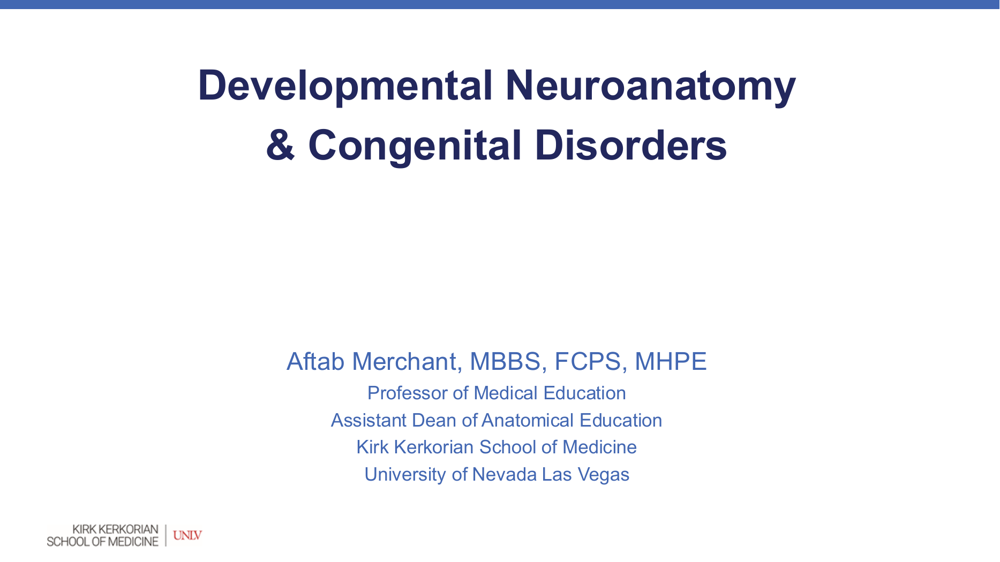
Original extracted slide text
Developmental Neuroanatomy & Congenital Disorders Aftab Merchant, MBBS, FCPS, MHPE Professor of Medical Education Assistant Dean of Anatomical Education Kirk Kerkorian School of Medicine University of Nevada Las Vegas
Learning Objectives
Show full original slide image
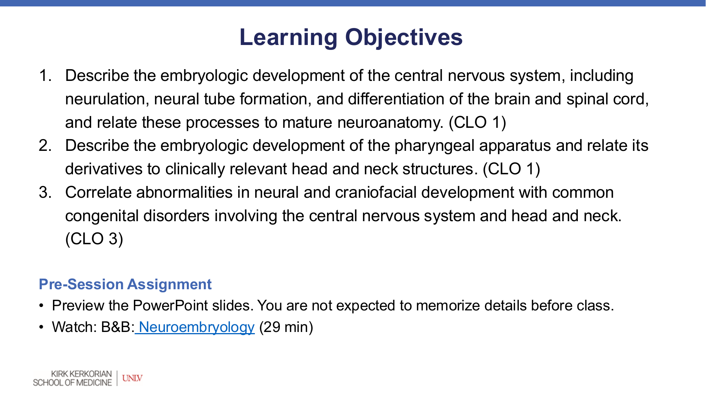
Original extracted slide text
Learning Objectives 1. Describe the embryologic development of the central nervous system, including neurulation, neural tube formation, and differentiation of the brain and spinal cord, and relate these processes to mature neuroanatomy. (CLO 1) 2. Describe the embryologic development of the pharyngeal apparatus and relate its derivatives to clinically relevant head and neck structures. (CLO 1) 3. Correlate abnormalities in neural and craniofacial development with common congenital disorders involving the central nervous system and head and neck. (CLO 3) Pre-Session Assignment • Preview the PowerPoint slides. You are not expected to memorize details before class. • Watch: B&B: Neuroembryology (29 min)
Development of the Neural Tube
Tested concepts and clinical applications
- Q001 — The axial mesodermal notochord provides inductive signals to overlying ectoderm, initiating neural plate development.
- Q002 — Plate bending creates a groove bounded by folds; fusion produces the tube and separates it from the future epidermis.
- Q003 — SHH from notochord and floor plate patterns ventral neural tissue; the deck also names BMP/TGF-beta and Wnt pathways as participants in neurulation.
- Q004 — Roof-plate/overlying ectoderm BMP signaling favors dorsal identities, whereas notochord/floor-plate SHH favors ventral identities. Wnt pathways also participate in plate shaping and regional patterning.
- Q005 — Ventral basal plate develops motor regions, while dorsal alar plate contributes sensory processing regions; this is a high-yield extension of SHH/BMP patterning.
Qualification: SHH is the classic ventral patterning signal; dorsal BMP/TGF-beta and Wnt pathways also participate. Neural induction is not identical to subsequent dorsal–ventral patterning.
Show full original slide image
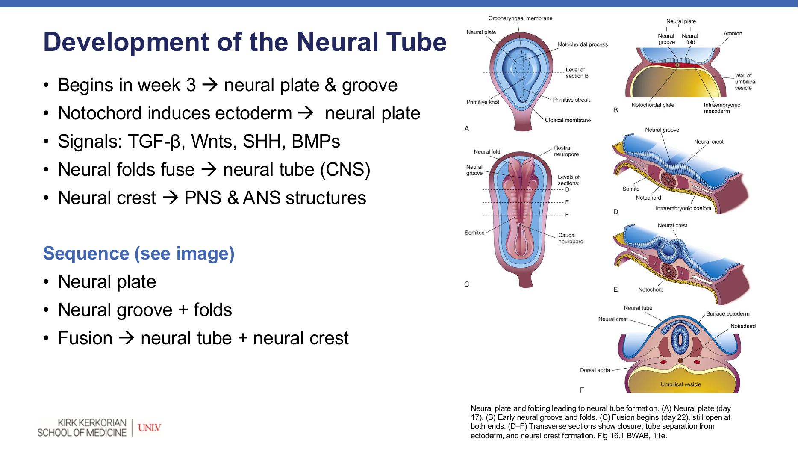
Original extracted slide text
Development of the Neural Tube • Begins in week 3 → neural plate & groove • Notochord induces ectoderm → neural plate • Signals: TGF-β, Wnts, SHH, BMPs • Neural folds fuse → neural tube (CNS) • Neural crest → PNS & ANS structures Sequence (see image) • Neural plate • Neural groove + folds • Fusion → neural tube + neural crest Neural plate and folding leading to neural tube formation. (A) Neural plate (day 17). (B) Early neural groove and folds. (C) Fusion begins (day 22), still open at both ends. (D–F) Transverse sections show closure, tube separation from ectoderm, and neural crest formation. Fig 16.1 BWAB, 11e.
Neurulation (Week 4)
Tested concepts and clinical applications
- Q006 — Closure begins near the future cervical region and progresses toward the cranial and caudal ends.
- Q007 — These are the deck's approximate embryonic ages; closure is normally completed by the end of week 4.
- Q008 — The neural canal persists as the CSF-containing ventricular system and central canal; the tube wall becomes CNS tissue.
Show full original slide image
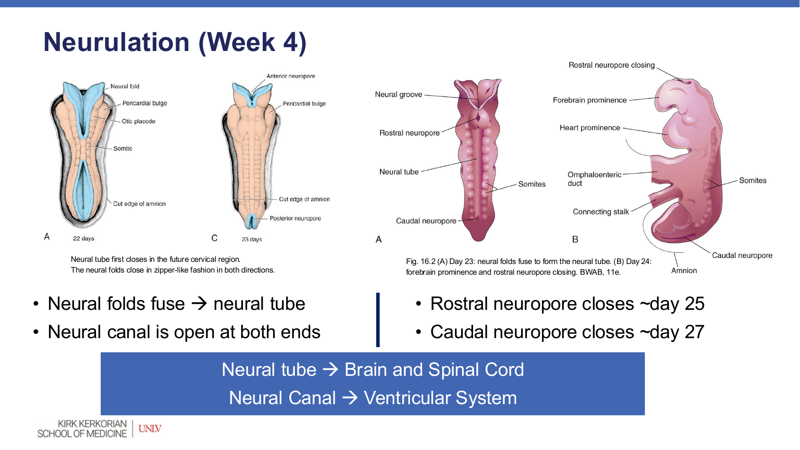
Original extracted slide text
Neurulation (Week 4) Neural tube first closes in the future cervical region. Fig. 16.2 (A) Day 23: neural folds fuse to form the neural tube. (B) Day 24: The neural folds close in zipper-like fashion in both directions. forebrain prominence and rostral neuropore closing. BWAB, 11e. • Neural folds fuse → neural tube • Rostral neuropore closes ~day 25 • Neural canal is open at both ends • Caudal neuropore closes ~day 27 Neural tube → Brain and Spinal Cord Neural Canal → Ventricular System
Neural Tube
Tested concepts and clinical applications
- Q009 — The telencephalon is a secondary forebrain vesicle and produces the hemispheres surrounding the lateral ventricles.
- Q010 — The diencephalon surrounds the third ventricle and gives rise to these forebrain structures, including the neural retina.
- Q011 — The mesencephalon remains the midbrain, and its narrow cavity becomes the cerebral aqueduct.
- Q012 — The rostral secondary hindbrain vesicle forms pons and cerebellum and contributes to the fourth ventricular cavity.
- Q013 — Myelencephalon is the caudal secondary hindbrain vesicle; its cavity contributes to the fourth ventricle and transition to the central canal.
Show full original slide image
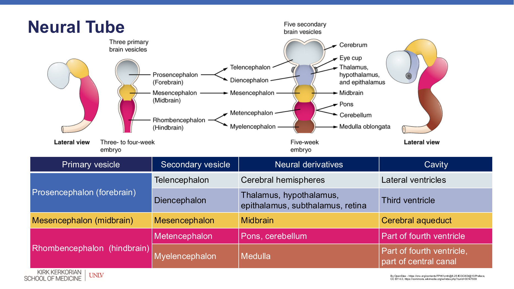
Original extracted slide text
Neural Tube Primary vesicle Secondary vesicle Neural derivatives Cavity Telencephalon Cerebral hemispheres Lateral ventricles Prosencephalon (forebrain) Thalamus, hypothalamus, Diencephalon Third ventricle epithalamus, subthalamus, retina Mesencephalon (midbrain) Mesencephalon Midbrain Cerebral aqueduct Metencephalon Pons, cerebellum Part of fourth ventricle Rhombencephalon (hindbrain) Part of fourth ventricle, Myelencephalon Medulla part of central canal By OpenStax - https://cnx.org/contents/FPtK1zmh@8.25:fEI3C8Ot@10/Preface, CC BY 4.0, https://commons.wikimedia.org/w/index.php?curid=30147939
Neural Crest
Tested concepts and clinical applications
- Q014 — EMT permits crest cells to delaminate and migrate into peripheral and craniofacial sites. Timing varies by region; cranial migration can begin before complete tube closure.
- Q015 — Sensory ganglia, peripheral glia, and chromaffin cells are classic neural crest derivatives shown in the source diagram.
- Q016 — Crest cells normally form enteric ganglia; failure to populate distal bowel causes Hirschsprung disease, a related application of the diagram's enteric nervous system derivative.
- Q017 — Pigment cells and dentin-producing odontoblasts are crest derivatives; enamel-producing ameloblasts instead arise from oral ectoderm.
- Q018 — These structures develop from neural tube neuroectoderm, with retina and posterior pituitary associated with forebrain outgrowths.
- Q019 — Lens/corneal epithelium and epidermal appendages derive from surface ectoderm; oral and otic ectoderm produce adenohypophysis/enamel and inner ear, respectively.
- Q020 — The source chart lists these endodermal epithelia, together with middle-ear/auditory-tube/tonsillar epithelia and much of bladder/urachal lining. Surrounding connective tissues can have other origins.
- Q021 — Intermediate mesoderm supplies urogenital organs, ducts, and associated structures.
- Q022 — These are the diagram's broad derivative groups. Blood/lymph lineages, spleen, and adrenal cortex are mesodermal; cranial connective tissue also has substantial neural crest contributions.
- Q023 — Cranial ectomesenchyme is crest-derived, so the diagram's broad 'head mesoderm/dentin' grouping should not override the specific odontoblast lineage.
Qualification: The original diagram is retained unchanged. Its dentin/head-mesoderm grouping is simplified: odontoblasts are cranial neural crest-derived. Cranial crest migration can start before full tube closure, so the timing bullet is not universal. Cranial sensory ganglia may have both placodal and crest contributions.
Show full original slide image
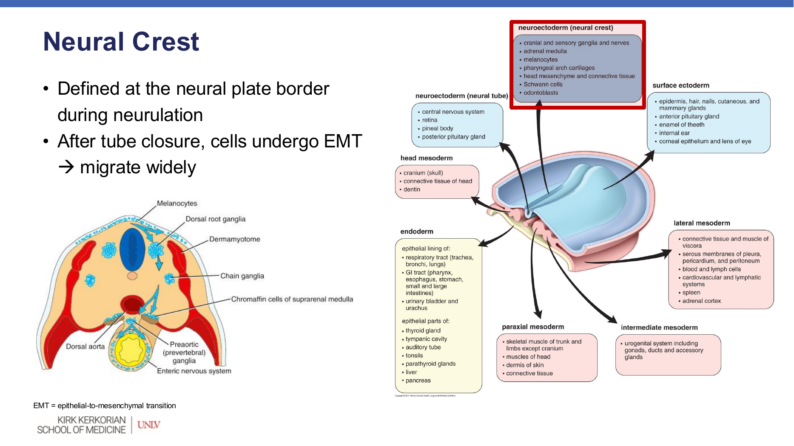
Original extracted slide text
Neural Crest • Defined at the neural plate border during neurulation • After tube closure, cells undergo EMT → migrate widely EMT = epithelial-to-mesenchymal transition
Failure of Neural Tube Closure
Tested concepts and clinical applications
- Q024 — Anencephaly follows failure of cranial neural tube closure and involves severe loss of cerebral hemispheres and calvarium.
- Q025 — Failure of posterior closure is associated with open spinal dysraphism. A simple closed vertebral arch defect is distinguished from exposed neural tissue.
Show full original slide image
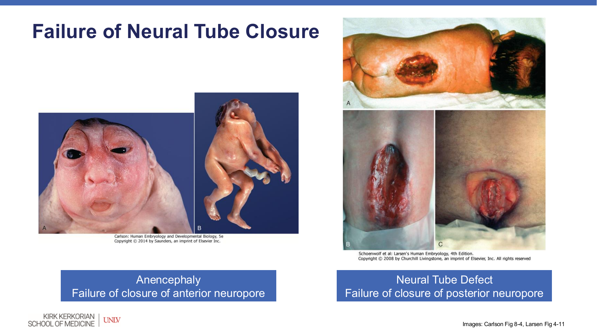
Original extracted slide text
Failure of Neural Tube Closure Anencephaly Neural Tube Defect Failure of closure of anterior neuropore Failure of closure of posterior neuropore Images: Carlson Fig 8-4, Larsen Fig 4-11
Spina Bifida
Tested concepts and clinical applications
- Q026 — A bony posterior arch defect without meningeal/neural herniation is the defining finding; some cutaneous markers warrant evaluation for occult dysraphism.
- Q027 — The sac contains meninges and CSF without spinal cord; neurologic deficits are often absent but depend on associated abnormalities.
- Q028 — Myelomeningocele contains neural tissue and may cause motor, sensory, and bowel/bladder deficits; exposed tissue increases infection risk.
- Q029 — Myelomeningocele is strongly associated with Chiari II and hydrocephalus; this is a related NBME association beyond sac-content classification.
Qualification: Occulta is a closed vertebral arch defect; open neural lesions differ in sac contents and neurologic risk. Cutaneous markers can accompany more complex occult dysraphism.
Show full original slide image
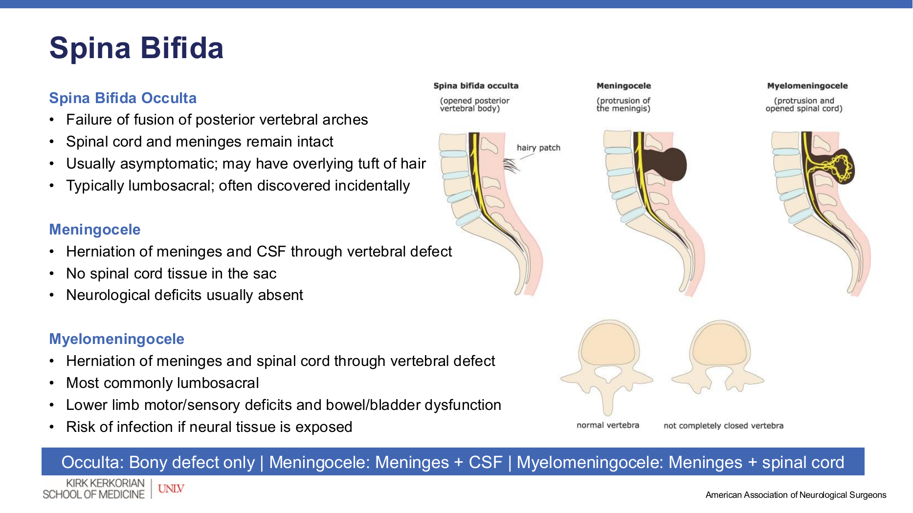
Original extracted slide text
Spina Bifida Spina Bifida Occulta • Failure of fusion of posterior vertebral arches • Spinal cord and meninges remain intact • Usually asymptomatic; may have overlying tuft of hair • Typically lumbosacral; often discovered incidentally Meningocele • Herniation of meninges and CSF through vertebral defect • No spinal cord tissue in the sac • Neurological deficits usually absent Myelomeningocele • Herniation of meninges and spinal cord through vertebral defect • Most commonly lumbosacral • Lower limb motor/sensory deficits and bowel/bladder dysfunction • Risk of infection if neural tissue is exposed Occulta: Bony defect only | Meningocele: Meninges + CSF | Myelomeningocele: Meninges + spinal cord American Association of Neurological Surgeons
Cervical meningocele and myelomeningocele photographs
Tested concepts and clinical applications
- Q030 — A meningocele contains meninges/CSF, whereas a myelomeningocele contains neural tissue; location or external appearance alone cannot reliably establish contents.
Show full original slide image
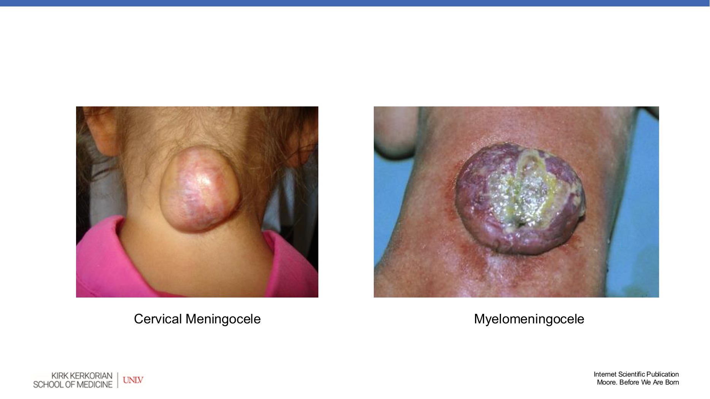
Original extracted slide text
Cervical Meningocele Myelomeningocele Internet Scientific Publication Moore. Before We Are Born
Neural Tube Defects (NTDs): Risk Factors & Prevention
Tested concepts and clinical applications
- Q031 — Closure occurs during the first month after fertilization, often before pregnancy recognition, so adequate folate must be present early.
- Q032 — The deck specifically identifies valproate and carbamazepine as associated with increased NTD risk; medication planning requires individualized clinical review.
- Q033 — NTDs are multifactorial: folate, medications such as carbamazepine/valproate, and genetic susceptibility all matter.
- Q034 — Open neural tissue can produce elevated amniotic AFP and acetylcholinesterase; AFP is a screening clue rather than a standalone diagnosis.
- Q035 — CDC recommends 400 micrograms daily; previous NTD pregnancy requires clinician-directed higher-dose planning rather than automatically using the average-risk amount.
Show full original slide image
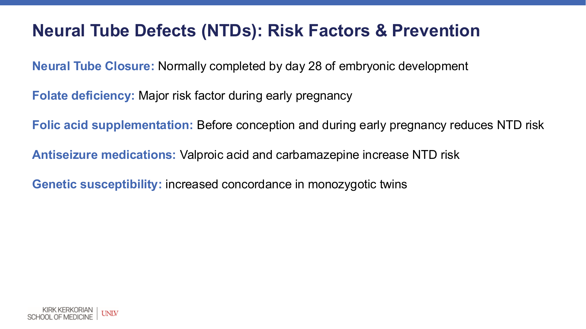
Original extracted slide text
Neural Tube Defects (NTDs): Risk Factors & Prevention Neural Tube Closure: Normally completed by day 28 of embryonic development Folate deficiency: Major risk factor during early pregnancy Folic acid supplementation: Before conception and during early pregnancy reduces NTD risk Antiseizure medications: Valproic acid and carbamazepine increase NTD risk Genetic susceptibility: increased concordance in monozygotic twins
Anencephaly & Holoprosencephaly
Tested concepts and clinical applications
- Q036 — Holoprosencephaly is defective forebrain cleavage, with severe forms producing cyclopia and other midline facial defects.
- Q037 — SHH is important in midline patterning, and trisomy 13 is a classic chromosomal association of holoprosencephaly.
- Q038 — Holoprosencephaly instead reflects failure of forebrain division; both can be severe, but the developmental mechanisms differ.
Show full original slide image
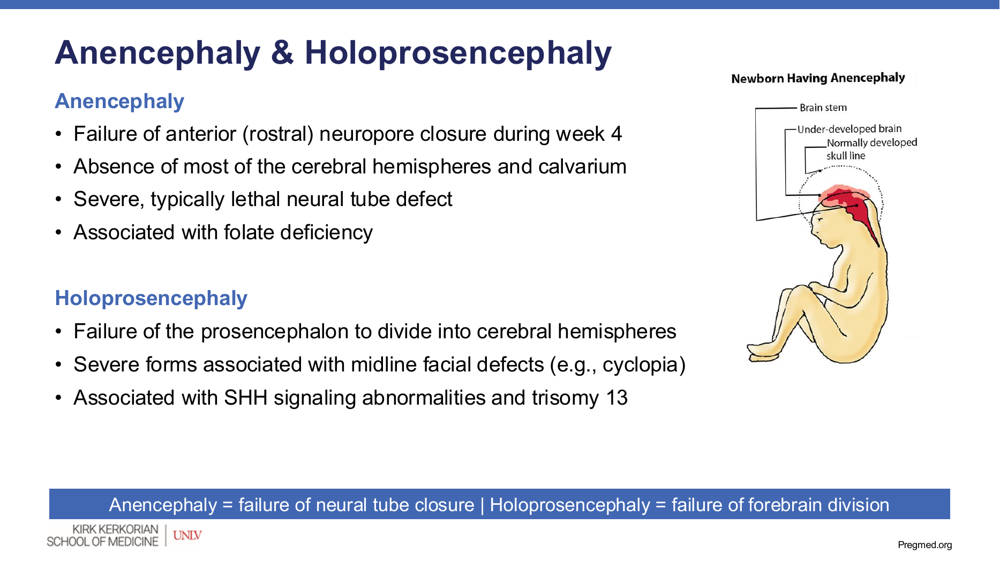
Original extracted slide text
Anencephaly & Holoprosencephaly Anencephaly • Failure of anterior (rostral) neuropore closure during week 4 • Absence of most of the cerebral hemispheres and calvarium • Severe, typically lethal neural tube defect • Associated with folate deficiency Holoprosencephaly • Failure of the prosencephalon to divide into cerebral hemispheres • Severe forms associated with midline facial defects (e.g., cyclopia) • Associated with SHH signaling abnormalities and trisomy 13 Anencephaly = failure of neural tube closure | Holoprosencephaly = failure of forebrain division Pregmed.org
Other Disorders of Brain Development
Tested concepts and clinical applications
- Q039 — Lissencephaly is a cortical migration disorder; LIS1/PAFAH1B1 and DCX are classic associated genes.
- Q040 — Both participate in neuronal migration; variants can produce abnormal cortical gyration and neurodevelopmental impairment.
- Q041 — Microcephaly is an abnormally small head associated with impaired brain growth; genetic disorders and congenital infections are relevant causes.
Show full original slide image
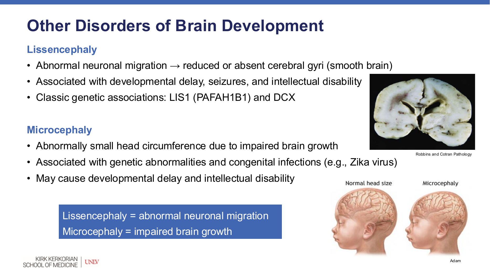
Original extracted slide text
Other Disorders of Brain Development Lissencephaly • Abnormal neuronal migration → reduced or absent cerebral gyri (smooth brain) • Associated with developmental delay, seizures, and intellectual disability • Classic genetic associations: LIS1 (PAFAH1B1) and DCX Microcephaly • Abnormally small head circumference due to impaired brain growth Robbins and Cotran Pathology • Associated with genetic abnormalities and congenital infections (e.g., Zika virus) • May cause developmental delay and intellectual disability Lissencephaly = abnormal neuronal migration Microcephaly = impaired brain growth Adam
Pharyngeal Apparatus
Show full original slide image
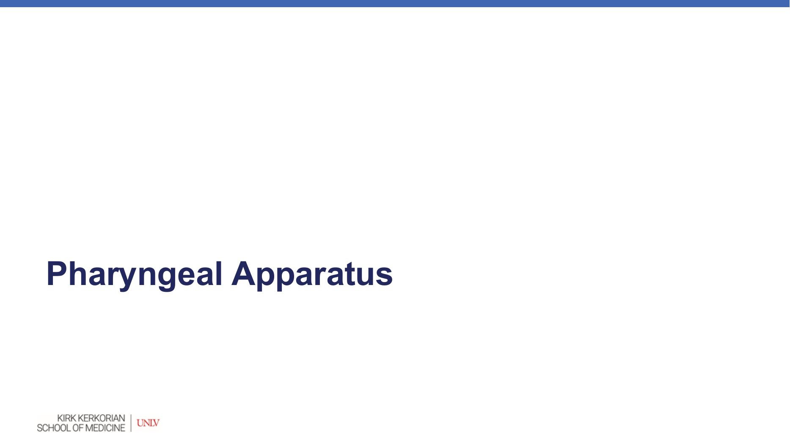
Original extracted slide text
Pharyngeal Apparatus
Neural Crest → Pharyngeal Arches
Tested concepts and clinical applications
- Q042 — Crest contributes extensively to arch cartilage, bone, connective tissue, and vascular smooth muscle; arch skeletal muscle is principally mesodermal.
Show full original slide image
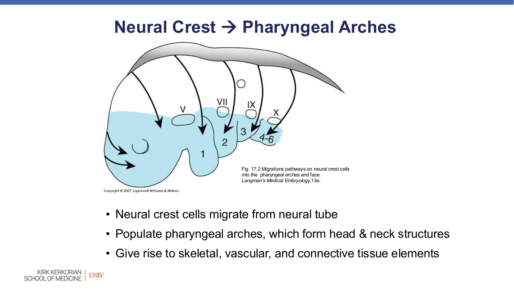
Original extracted slide text
Neural Crest → Pharyngeal Arches Fig. 17.2 Migrations pathways on neural crest cells into the pharyngeal arches and face. Langman’s Medical Embryology,13e. • Neural crest cells migrate from neural tube • Populate pharyngeal arches, which form head & neck structures • Give rise to skeletal, vascular, and connective tissue elements
Pharyngeal Apparatus Overview
Tested concepts and clinical applications
- Q043 — The pharyngeal apparatus becomes apparent early in week 4 and develops through this interval.
Show full original slide image
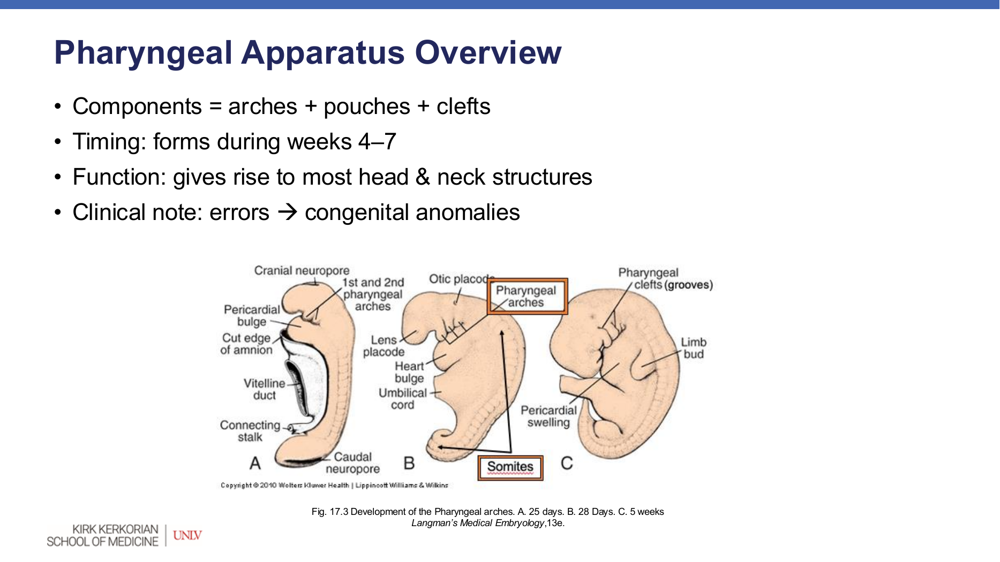
Original extracted slide text
Pharyngeal Apparatus Overview • Components = arches + pouches + clefts • Timing: forms during weeks 4–7 • Function: gives rise to most head & neck structures • Clinical note: errors → congenital anomalies Fig. 17.3 Development of the Pharyngeal arches. A. 25 days. B. 28 Days. C. 5 weeks Langman’s Medical Embryology,13e.
Arch 1 (Mandibular Arch)
Tested concepts and clinical applications
- Q044 — The mandibular arch contributes these structures. Much of the mandible ossifies in crest-derived mesenchyme adjacent to Meckel cartilage rather than simply replacing that cartilage.
- Q045 — V3 provides branchial motor supply to first-arch muscles, including these muscles and the tensor muscles.
- Q046 — Both are first-arch muscles; tensor veli palatini is the important exception to most palate muscles being supplied by vagus.
Show full original slide image
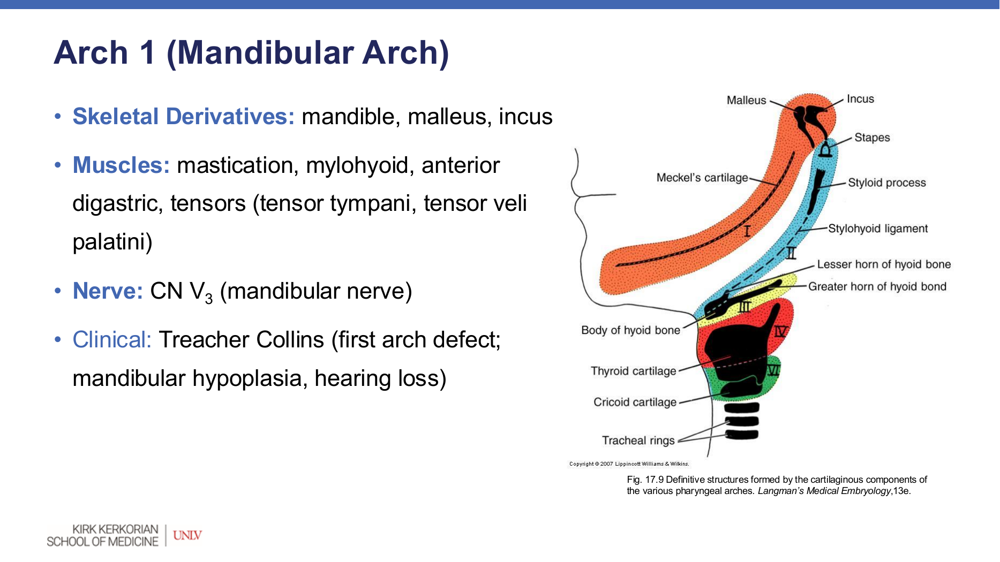
Original extracted slide text
Arch 1 (Mandibular Arch) • Skeletal Derivatives: mandible, malleus, incus • Muscles: mastication, mylohyoid, anterior digastric, tensors (tensor tympani, tensor veli palatini) • Nerve: CN V (mandibular nerve) 3 • Clinical: Treacher Collins (first arch defect; mandibular hypoplasia, hearing loss) Fig. 17.9 Definitive structures formed by the cartilaginous components of the various pharyngeal arches. Langman’s Medical Embryology,13e.
Arch 2 (Hyoid Arch)
Tested concepts and clinical applications
- Q047 — Reichert cartilage of the second arch contributes this group; stapes fixation can impair sound transmission.
- Q048 — These are all supplied by CN VII, the second-arch nerve.
- Q049 — CN VII innervates facial expression, orbicularis oculi, and stapedius; these are second-arch muscles.
- Q050 — Reichert cartilage derivatives include stapes, styloid process, stylohyoid ligament, and upper/lesser-horn hyoid components.
Show full original slide image
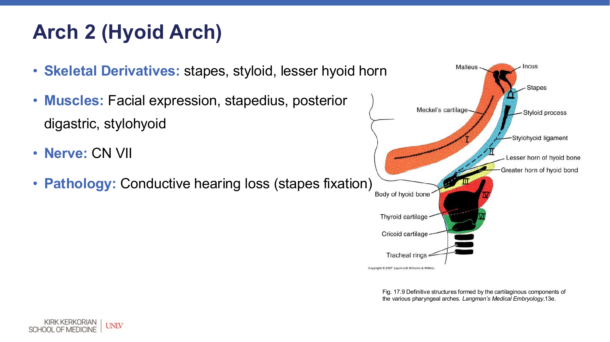
Original extracted slide text
Arch 2 (Hyoid Arch) • Skeletal Derivatives: stapes, styloid, lesser hyoid horn • Muscles: Facial expression, stapedius, posterior digastric, stylohyoid • Nerve: CN VII • Pathology: Conductive hearing loss (stapes fixation) Fig. 17.9 Definitive structures formed by the cartilaginous components of the various pharyngeal arches. Langman’s Medical Embryology,13e.
Arch 3 (Glossopharyngeal Arch)
Tested concepts and clinical applications
- Q051 — The third arch forms this skeletal/muscle group; glossopharyngeal nerve also supplies gag afference.
- Q052 — Glossopharyngeal provides the classic gag afferent limb; its arch muscle is stylopharyngeus. This sensory role is distinct from vagal gag motor output.
- Q053 — Second contributes lesser horn/upper body, while third contributes greater horn/lower body.
Show full original slide image
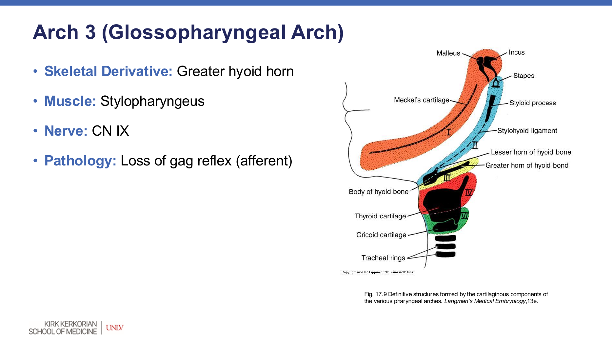
Original extracted slide text
Arch 3 (Glossopharyngeal Arch) • Skeletal Derivative: Greater hyoid horn • Muscle: Stylopharyngeus • Nerve: CN IX • Pathology: Loss of gag reflex (afferent) Fig. 17.9 Definitive structures formed by the cartilaginous components of the various pharyngeal arches. Langman’s Medical Embryology,13e.
Arches 4 & 6 (Laryngeal Arches)
Tested concepts and clinical applications
- Q054 — Cricothyroid is a fourth-arch muscle innervated by this vagal branch; most other intrinsic laryngeal muscles use recurrent laryngeal nerve.
- Q055 — Sixth-arch muscles receive recurrent laryngeal innervation; cricothyroid is the fourth-arch exception.
- Q056 — These exceptions are common exam discriminators when interpreting broad vagal pharyngeal/palatal associations.
- Q057 — These arches contribute laryngeal skeletal elements; cartilage contributions can be complex, so the grouped framework is the useful relationship.
Qualification: Separate fourth-arch superior laryngeal/cricothyroid relationships from sixth-arch recurrent laryngeal/other intrinsic laryngeal muscles. Stylopharyngeus and tensor veli palatini are important IX and V3 exceptions.
Show full original slide image
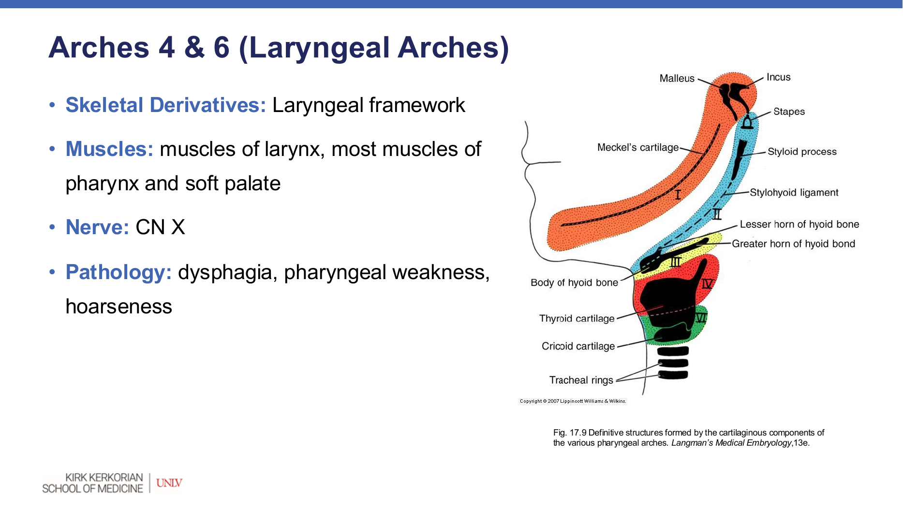
Original extracted slide text
Arches 4 & 6 (Laryngeal Arches) • Skeletal Derivatives: Laryngeal framework • Muscles: muscles of larynx, most muscles of pharynx and soft palate • Nerve: CN X • Pathology: dysphagia, pharyngeal weakness, hoarseness Fig. 17.9 Definitive structures formed by the cartilaginous components of the various pharyngeal arches. Langman’s Medical Embryology,13e.
Skeletal Structures of the Head and Face
Tested concepts and clinical applications
- Q058 — The diagram contrasts broad anterior crest and posterior mesodermal territories. Its label 'occipital somites' for all red areas is simplified; parietal bone is broadly paraxial mesodermal rather than entirely occipital-somite derived.
- Q059 — These facial bones are in the illustrated crest-derived region, along with much of the anterior skull and hyoid-related skeleton.
Qualification: The source color map is a broad crest-versus-mesoderm teaching schematic. Not all mesodermal skull territory is derived specifically from occipital somites.
Show full original slide image
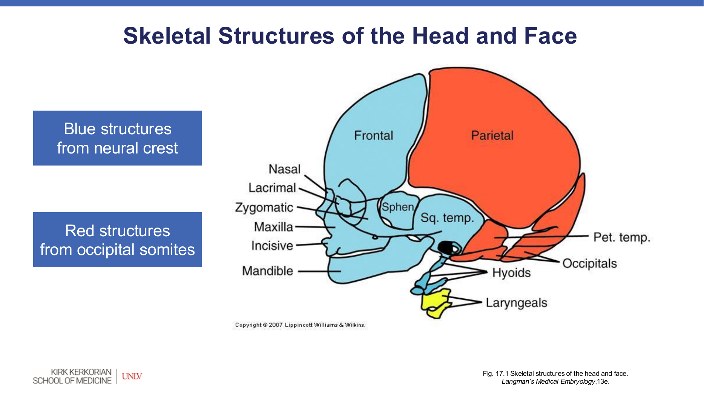
Original extracted slide text
Skeletal Structures of the Head and Face Blue structures from neural crest Red structures from occipital somites Fig. 17.1 Skeletal structures of the head and face. Langman’s Medical Embryology,13e.
Agnathia
Tested concepts and clinical applications
- Q060 — Agnathia denotes absent mandible/extreme first-arch hypoplasia and can be incompatible with life; deficient crest contribution is the mechanism emphasized by the deck.
Show full original slide image
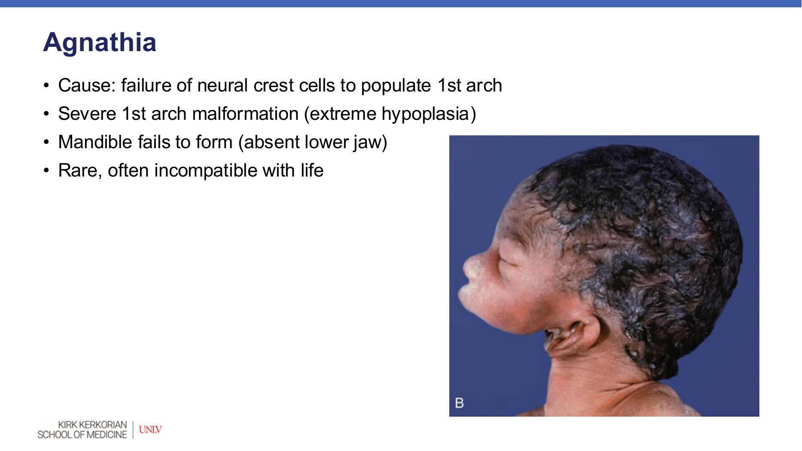
Original extracted slide text
Agnathia • Cause: failure of neural crest cells to populate 1st arch • Severe 1st arch malformation (extreme hypoplasia) • Mandible fails to form (absent lower jaw) • Rare, often incompatible with life
Treacher Collins Syndrome – Clinical Features
Tested concepts and clinical applications
- Q061 — This constellation is mandibulofacial dysostosis, commonly involving TCOF1 and abnormal cranial crest development/survival.
- Q062 — TCOF1 is the most common association, and severity can vary; other genes/inheritance patterns exist, so this is the typical rather than exclusive pattern.
- Q063 — Malformed external/middle-ear structures impair sound transmission; a first-arch malformation need not damage cochlear hair cells to cause hearing loss.
Show full original slide image
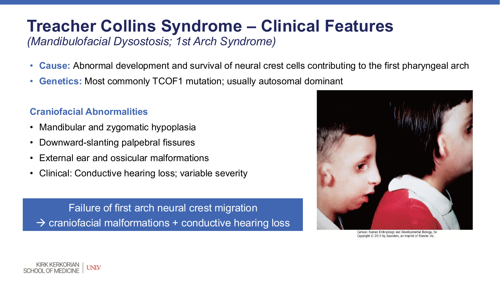
Original extracted slide text
Treacher Collins Syndrome – Clinical Features (Mandibulofacial Dysostosis; 1st Arch Syndrome) • Cause: Abnormal development and survival of neural crest cells contributing to the first pharyngeal arch • Genetics: Most commonly TCOF1 mutation; usually autosomal dominant Craniofacial Abnormalities • Mandibular and zygomatic hypoplasia • Downward-slanting palpebral fissures • External ear and ossicular malformations • Clinical: Conductive hearing loss; variable severity Failure of first arch neural crest migration → craniofacial malformations + conductive hearing loss
Pierre Robin Sequence
Tested concepts and clinical applications
- Q064 — Pierre Robin sequence begins with mandibular hypoplasia; secondary tongue-position effects disrupt palatal development and can impair feeding/breathing.
- Q065 — The tongue falls posteriorly in the setting of micrognathia, contributing to airway obstruction and interference with palate formation.
Show full original slide image
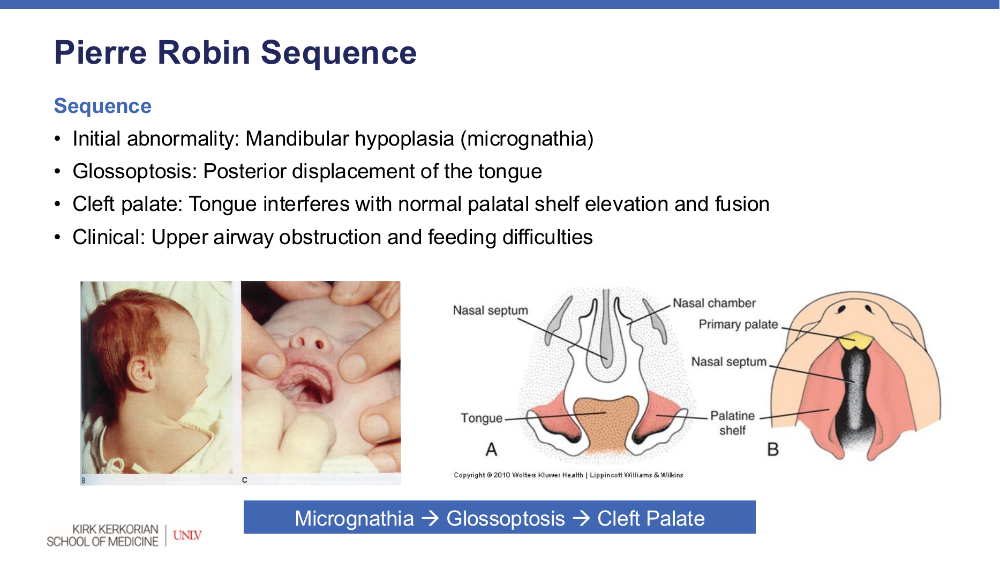
Original extracted slide text
Pierre Robin Sequence Sequence • Initial abnormality: Mandibular hypoplasia (micrognathia) • Glossoptosis: Posterior displacement of the tongue • Cleft palate: Tongue interferes with normal palatal shelf elevation and fusion • Clinical: Upper airway obstruction and feeding difficulties Micrognathia → Glossoptosis → Cleft Palate
Pharyngeal Apparatus: Arches, Pouches & Clefts
Tested concepts and clinical applications
- Q066 — Each arch contains skeletal, muscle, arterial, and nerve components in this layered organization.
- Q067 — This distinction predicts derivatives such as middle ear from first pouch and external meatus from first cleft.
- Q068 — The left distal sixth arch forms ductus arteriosus; proximal sixth arches contribute pulmonary arteries. This extends the deck's artery-per-arch concept.
- Q069 — The third arch is carotid-associated; fourth forms left aortic arch/right proximal subclavian, while sixth is pulmonary/ductus-associated.
Show full original slide image
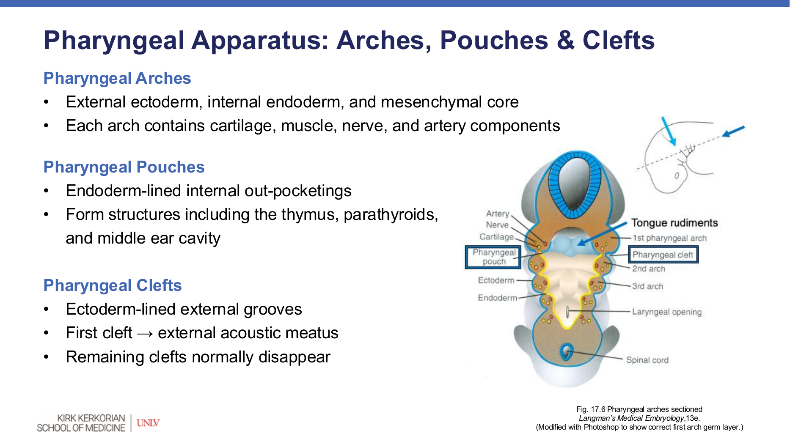
Original extracted slide text
Pharyngeal Apparatus: Arches, Pouches & Clefts Pharyngeal Arches • External ectoderm, internal endoderm, and mesenchymal core • Each arch contains cartilage, muscle, nerve, and artery components Pharyngeal Pouches • Endoderm-lined internal out-pocketings • Form structures including the thymus, parathyroids, and middle ear cavity Pharyngeal Clefts • Ectoderm-lined external grooves • First cleft → external acoustic meatus • Remaining clefts normally disappear Fig. 17.6 Pharyngeal arches sectioned Langman’s Medical Embryology,13e. (Modified with Photoshop to show correct first arch germ layer.)
Pouches
Tested concepts and clinical applications
- Q070 — The first pouch tubotympanic recess forms these endodermal epithelial spaces; the external canal instead comes from first cleft.
- Q071 — Second pouch contributes tonsillar epithelium and crypts; lymphocytes subsequently populate the tissue from hematopoietic lineages.
- Q072 — Inferior parathyroids descend with thymic tissue from third pouch, traveling farther than fourth-pouch superior glands and allowing ectopic locations.
- Q073 — The deck groups this with fourth pouch (sometimes termed fourth/fifth complex). Modern mammalian lineage evidence supports an endodermal C-cell origin; older charts often label them neural crest-derived.
- Q074 — The DiGeorge phenotype links thymic/parathyroid hypoplasia to T-cell deficiency and hypocalcemia, often in 22q11.2 deletion with conotruncal abnormalities.
- Q075 — Thymic epithelial development is necessary for normal T-cell maturation; third-pouch dysfunction can therefore impair cellular immunity.
- Q076 — The eardrum illustrates first membrane formation at the interface of external canal and middle-ear cavity.
Qualification: Pouch contributions refer principally to epithelial primordia, not every cell in the mature organ. C-cell contribution is through ultimobranchial bodies; modern mammalian lineage studies support endoderm rather than the older universal neural-crest assignment.
Show full original slide image
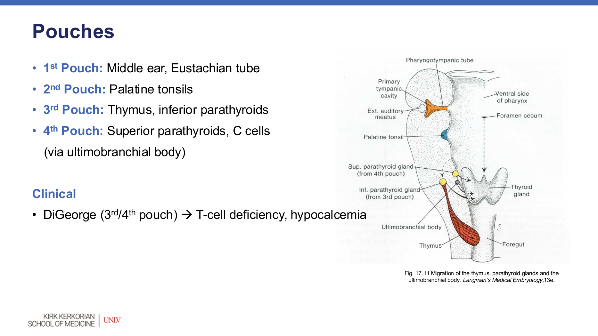
Original extracted slide text
Pouches • 1st Pouch: Middle ear, Eustachian tube • 2nd Pouch: Palatine tonsils • 3rd Pouch: Thymus, inferior parathyroids • 4th Pouch: Superior parathyroids, C cells (via ultimobranchial body) Clinical • DiGeorge (3rd/4th pouch) → T-cell deficiency, hypocalcemia Fig. 17.11 Migration of the thymus, parathyroid glands and the ultimobranchial body. Langman’s Medical Embryology,13e.
Branchial (Pharyngeal) Clefts
Tested concepts and clinical applications
- Q077 — The first ectodermal cleft forms the external acoustic meatus; clefts 2–4 are normally overgrown and obliterated.
- Q078 — Persistence of second-cleft/cervical sinus tissue produces a lateral neck cyst, sinus, or fistula.
Show full original slide image
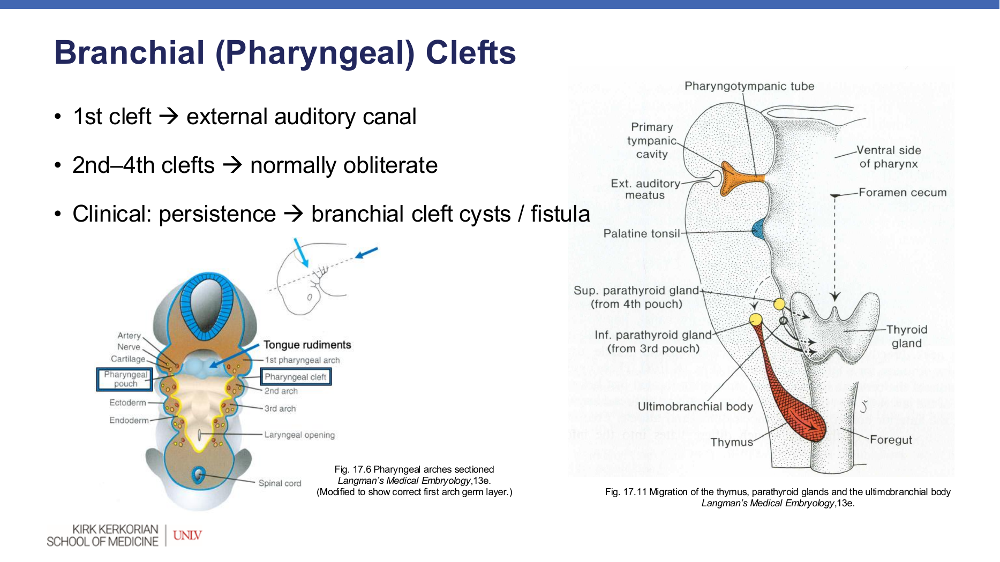
Original extracted slide text
Branchial (Pharyngeal) Clefts • 1st cleft → external auditory canal • 2nd–4th clefts → normally obliterate • Clinical: persistence → branchial cleft cysts / fistula Fig. 17.6 Pharyngeal arches sectioned Langman’s Medical Embryology,13e. (Modified to show correct first arch germ layer.) Fig. 17.11 Migration of the thymus, parathyroid glands and the ultimobranchial body Langman’s Medical Embryology,13e.
Branchial Cleft Cyst (Lateral Cervical Cyst)
Tested concepts and clinical applications
- Q079 — The location and behavior are characteristic of a branchial cleft cyst.
- Q080 — A fistula has two openings; a sinus has one opening, and a cyst is a closed cavity.
- Q081 — A single opening with a blind end is a sinus.
Show full original slide image
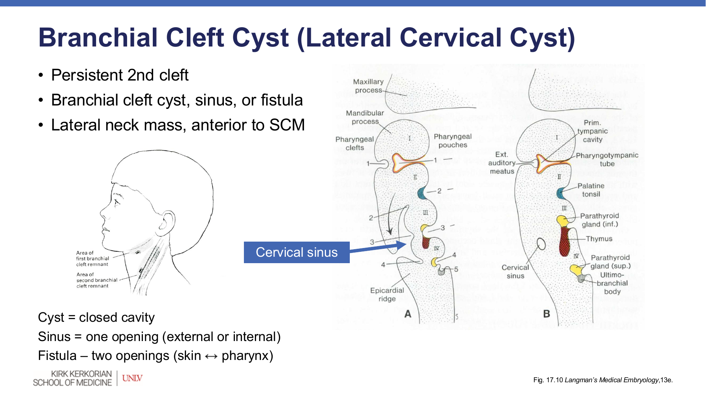
Original extracted slide text
Branchial Cleft Cyst (Lateral Cervical Cyst) • Persistent 2nd cleft • Branchial cleft cyst, sinus, or fistula • Lateral neck mass, anterior to SCM Cervical sinus Cyst = closed cavity Sinus = one opening (external or internal) Fistula – two openings (skin pharynx) Fig. 17.10 Langman’s Medical Embryology,13e.
Thyroid Development
Tested concepts and clinical applications
- Q082 — The thyroid primordium appears near this midline site in week 4 and descends into the neck through the thyroglossal tract.
- Q083 — Regression leaves the thyroid separated from the original tongue-base site; persistent tissue can form a cyst or ectopic gland.
- Q084 — The figure's pyramidal lobe is a thyroid-descent remnant; a cyst and lingual thyroid are other abnormalities related to this pathway.
Show full original slide image
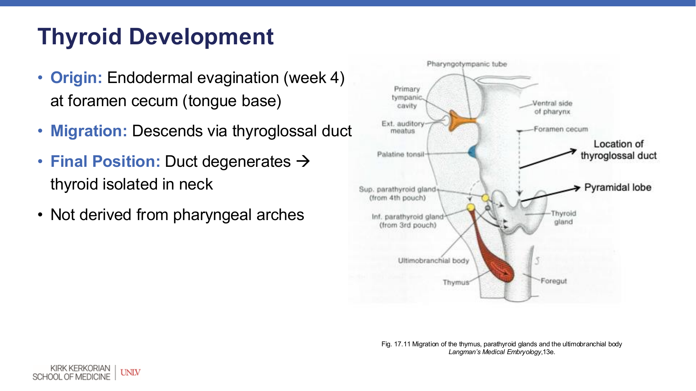
Original extracted slide text
Thyroid Development • Origin: Endodermal evagination (week 4) at foramen cecum (tongue base) • Migration: Descends via thyroglossal duct • Final Position: Duct degenerates → thyroid isolated in neck • Not derived from pharyngeal arches Fig. 17.11 Migration of the thymus, parathyroid glands and the ultimobranchial body Langman’s Medical Embryology,13e.
Clinical: Thyroid Development
Tested concepts and clinical applications
- Q085 — Attachment along the thyroid's migration path accounts for characteristic midline position and movement.
- Q086 — Thyroid tissue can remain at the original tongue-base region; ectopic tissue may be the patient's only functioning thyroid.
Show full original slide image
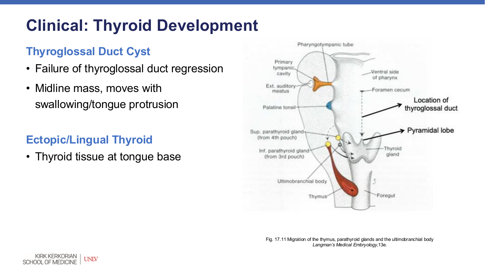
Original extracted slide text
Clinical: Thyroid Development Thyroglossal Duct Cyst • Failure of thyroglossal duct regression • Midline mass, moves with swallowing/tongue protrusion Ectopic/Lingual Thyroid • Thyroid tissue at tongue base Fig. 17.11 Migration of the thymus, parathyroid glands and the ultimobranchial body Langman’s Medical Embryology,13e.
Thyroglossal Duct Cyst vs. Branchial Cleft Cyst
Tested concepts and clinical applications
- Q087 — These classic patterns distinguish thyroid-tract remnants from second-cleft/cervical sinus remnants, although real masses still require evaluation.
Show full original slide image
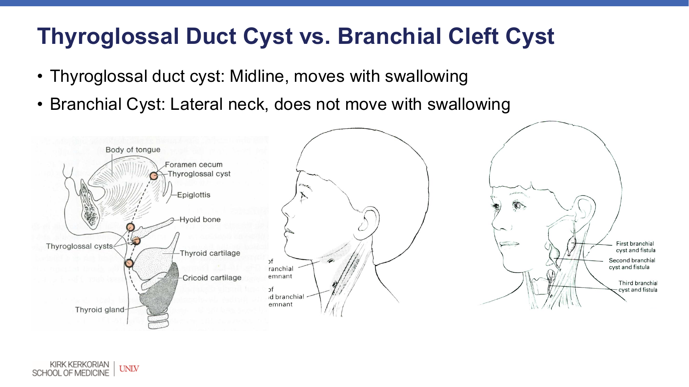
Original extracted slide text
Thyroglossal Duct Cyst vs. Branchial Cleft Cyst • Thyroglossal duct cyst: Midline, moves with swallowing • Branchial Cyst: Lateral neck, does not move with swallowing
Development of the Face
Show full original slide image
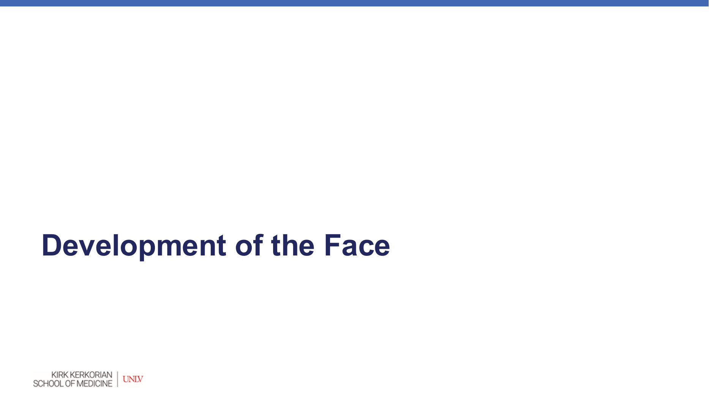
Original extracted slide text
Development of the Face
Facial Prominences
Tested concepts and clinical applications
- Q088 — This is the five-prominence organization; maxillary and mandibular prominences are first-arch components.
- Q089 — The paired first-arch mandibular prominences contribute the lower face and jaw.
- Q090 — Maxillary prominences form these upper facial regions and also give rise to secondary palatal shelves.
Show full original slide image
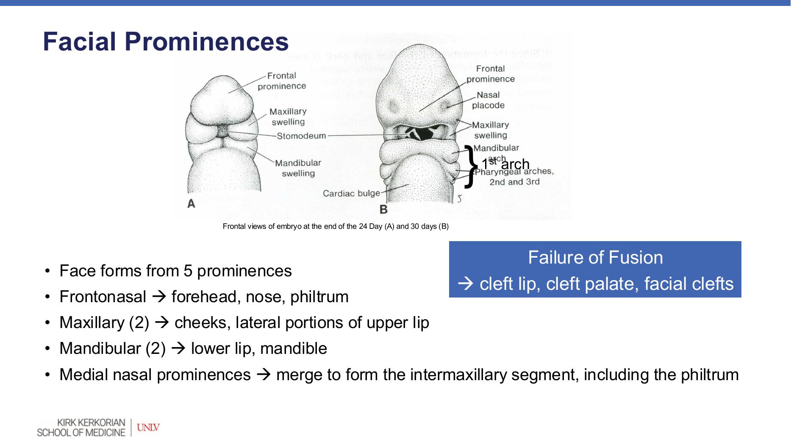
Original extracted slide text
Facial Prominences } 1st arch Frontal views of embryo at the end of the 24 Day (A) and 30 days (B) Failure of Fusion • Face forms from 5 prominences → cleft lip, cleft palate, facial clefts • Frontonasal → forehead, nose, philtrum • Maxillary (2) → cheeks, lateral portions of upper lip • Mandibular (2) → lower lip, mandible • Medial nasal prominences → merge to form the intermaxillary segment, including the philtrum
Development of the Face
Tested concepts and clinical applications
- Q091 — Their merger produces the intermaxillary segment, including central upper lip/philtrum and primary palate.
- Q092 — Failure of this union produces the classic cleft lip.
- Q093 — The lateral nasal prominences contribute the nasal alae; medial prominences contribute the intermaxillary segment.
Show full original slide image
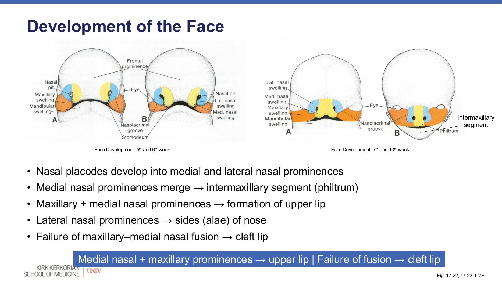
Original extracted slide text
Development of the Face Intermaxillary segment Face Development: 5th and 6th week Face Development: 7th and 10th week • Nasal placodes develop into medial and lateral nasal prominences • Medial nasal prominences merge → intermaxillary segment (philtrum) • Maxillary + medial nasal prominences → formation of upper lip • Lateral nasal prominences → sides (alae) of nose • Failure of maxillary–medial nasal fusion → cleft lip Medial nasal + maxillary prominences → upper lip | Failure of fusion → cleft lip Fig. 17.22, 17.23. LME
Palate Formation
Tested concepts and clinical applications
- Q094 — This is the primary palate; the incisive foramen is a key boundary with secondary palate.
- Q095 — The shelves elevate and fuse, forming the remaining hard palate and the soft palate.
- Q096 — These fusions establish the roof of the mouth and separation of oral/nasal spaces.
Show full original slide image
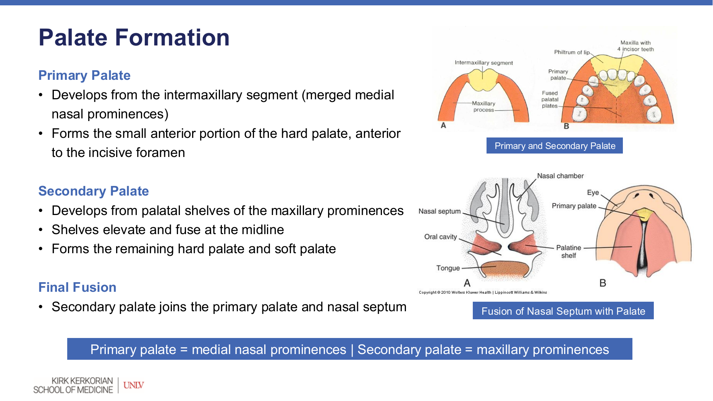
Original extracted slide text
Palate Formation Primary Palate • Develops from the intermaxillary segment (merged medial nasal prominences) • Forms the small anterior portion of the hard palate, anterior Primary and Secondary Palate to the incisive foramen Secondary Palate • Develops from palatal shelves of the maxillary prominences • Shelves elevate and fuse at the midline • Forms the remaining hard palate and soft palate Final Fusion • Secondary palate joins the primary palate and nasal septum Fusion of Nasal Septum with Palate Primary palate = medial nasal prominences | Secondary palate = maxillary prominences
Palate Formation: Stepwise Sequence
Tested concepts and clinical applications
- Q097 — The shelves initially lie vertically; clearance by the descending tongue permits horizontal elevation and subsequent fusion.
- Q098 — Reduced mandibular space and glossoptosis interfere mechanically with normal shelf repositioning, as in Pierre Robin sequence.
Show full original slide image
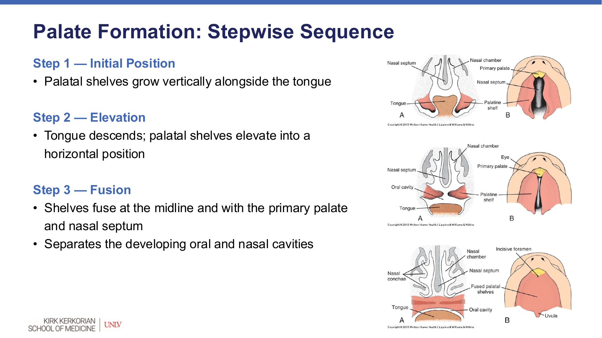
Original extracted slide text
Palate Formation: Stepwise Sequence Step 1 — Initial Position • Palatal shelves grow vertically alongside the tongue Step 2 — Elevation • Tongue descends; palatal shelves elevate into a horizontal position Step 3 — Fusion • Shelves fuse at the midline and with the primary palate and nasal septum • Separates the developing oral and nasal cavities
Normal and Abnormal Development of the Lip and Palate
Tested concepts and clinical applications
- Q099 — An isolated cleft palate can occur with a normal lip and causes feeding, regurgitation, and speech problems.
- Q100 — Primary palate is anterior to this landmark; secondary palate is posterior. Clefts can extend across this boundary.
Show full original slide image
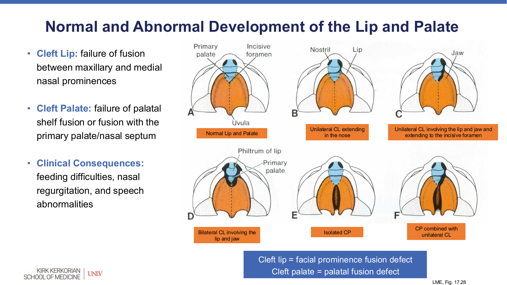
Original extracted slide text
Normal and Abnormal Development of the Lip and Palate • Cleft Lip: failure of fusion between maxillary and medial nasal prominences • Cleft Palate: failure of palatal shelf fusion or fusion with the Unilateral CL extending Unilateral CL involving the lip and jaw and primary palate/nasal septum Normal Lip and Palate in the nose extending to the incisive foramen • Clinical Consequences: feeding difficulties, nasal regurgitation, and speech abnormalities CP combined with Bilateral CL involving the Isolated CP unilateral CL lip and jaw Cleft lip = facial prominence fusion defect Cleft palate = palatal fusion defect LME, Fig. 17.28
Cleft Lip and Palate (Facial Clefts)
Tested concepts and clinical applications
- Q101 — This related image-based application distinguishes an oblique facial cleft from the more common maxillary–medial nasal cleft lip.
- Q102 — Their merger forms the central intermaxillary segment; failure can produce a median upper-lip cleft.
- Q103 — Lip defects concern facial prominence union; palatal defects concern shelves and their connections. Either may occur alone or together.
Show full original slide image
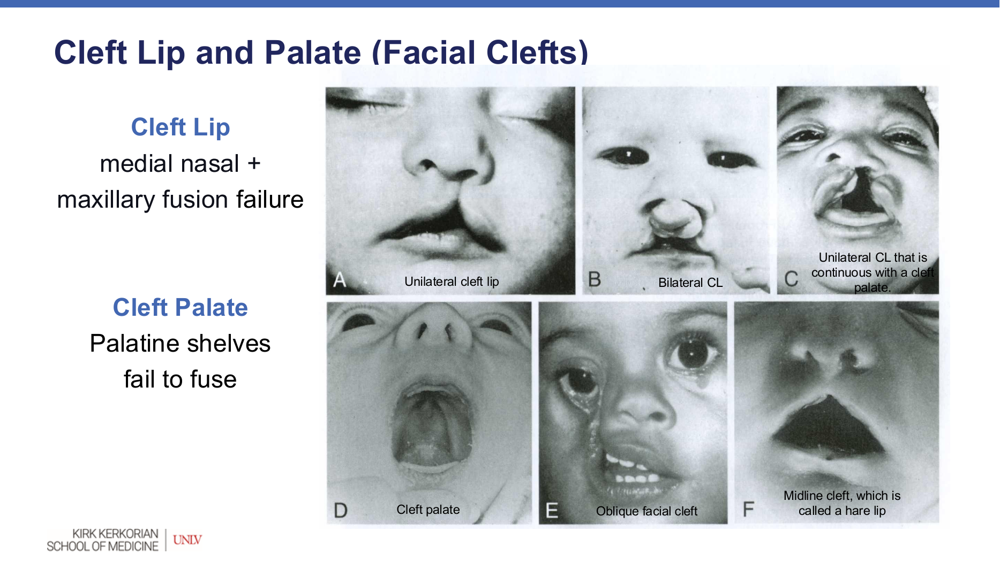
Original extracted slide text
Cleft Lip and Palate (Facial Clefts) Cleft Lip medial nasal + maxillary fusion failure Unilateral CL that is continuous with a cleft Unilateral cleft lip Bilateral CL palate. Cleft Palate Palatine shelves fail to fuse Midline cleft, which is Cleft palate Oblique facial cleft called a hare lip
Developmental
Show full original slide image
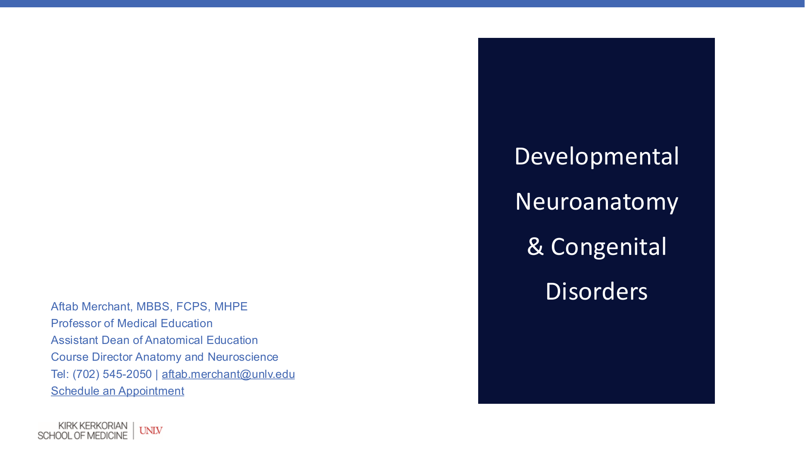
Original extracted slide text
Developmental Neuroanatomy & Congenital Disorders Aftab Merchant, MBBS, FCPS, MHPE Professor of Medical Education Assistant Dean of Anatomical Education Course Director Anatomy and Neuroscience Tel: (702) 545-2050 | aftab.merchant@unlv.edu Schedule an Appointment
Visual Pathway
| Slide | Source content | Practice |
|---|---|---|
| 1 | Visual System | Title, objectives, divider, or closing page retained |
| 2 | Learning Objectives (2026) | Title, objectives, divider, or closing page retained |
| 3 | Eye Structure & Image Formation | Title, objectives, divider, or closing page retained |
| 4 | Layers of the Eyeball | Q104, Q105, Q106, Q107, Q108, Q109, Q110, Q111, Q112 |
| 5 | Cornea, Lens, Image Formation | Q113, Q114, Q115, Q116 |
| 6 | Ciliary Body & Accommodation | Q117, Q118, Q119 |
| 7 | Iris & Pupillary Control | Q120, Q121, Q122, Q123, Q124 |
| 8 | Retina, Macula, Fovea & Optic Disc | Q125, Q126, Q127, Q128, Q129 |
| 9 | Normal fundus landmarks | Q130, Q131 |
| 10 | Normal disc versus papilledema | Q132, Q133, Q134 |
| 11 | Visual Fields & Visual Pathways | Title, objectives, divider, or closing page retained |
| 12 | Visual Fields vs Retinal Fields | Q135, Q136, Q137 |
| 13 | Nasal vs Temporal Hemiretina | Q138, Q139 |
| 14 | Visual Pathway: Retina to Cortex | Q140, Q141, Q142 |
| 15 | Optic Chiasm: Which Fibers Cross? | Q143, Q144, Q145 |
| 16 | Lateral Geniculate Nucleus & Optic Radiations | Q146, Q147, Q148 |
| 17 | Primary Visual Cortex (V1) | Q149, Q150, Q151, Q152 |
| 18 | Visual Pathway: Three Rules for Localization | Q153, Q154 |
| 19 | Visual Field Defects & Lesion Localization | Title, objectives, divider, or closing page retained |
| 20 | Visual Field Defects: Localization Principles | Q155, Q156 |
| 21 | Optic Nerve & Optic Chiasm Lesions | Q157, Q158, Q159 |
| 22 | Optic Tract Lesion | Q160, Q161 |
| 23 | Optic Radiations: Temporal vs Parietal Lesions | Q162, Q163, Q164 |
| 24 | Primary Visual Cortex Lesions | Q165, Q166, Q167 |
| 25 | Visual Field Defects: Summary | Q168, Q169, Q170 |
| 26 | Visual System: | Title, objectives, divider, or closing page retained |
Visual System
Show full original slide image
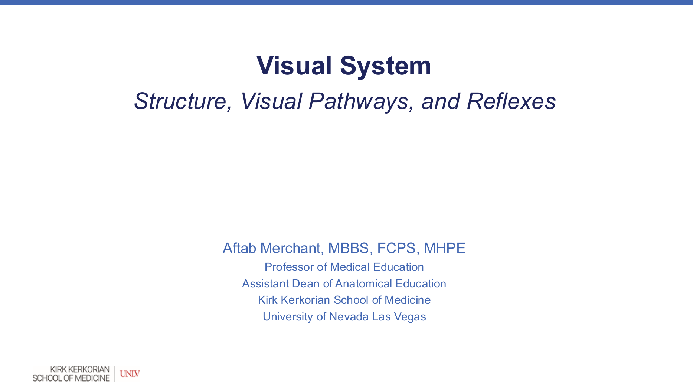
Original extracted slide text
Visual System Structure, Visual Pathways, and Reflexes Aftab Merchant, MBBS, FCPS, MHPE Professor of Medical Education Assistant Dean of Anatomical Education Kirk Kerkorian School of Medicine University of Nevada Las Vegas
Learning Objectives (2026)
Show full original slide image
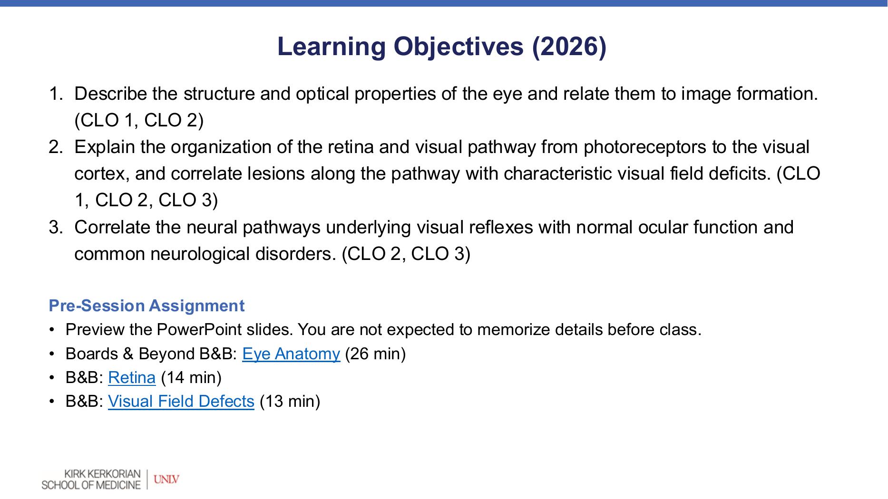
Original extracted slide text
Learning Objectives (2026) 1. Describe the structure and optical properties of the eye and relate them to image formation. (CLO 1, CLO 2) 2. Explain the organization of the retina and visual pathway from photoreceptors to the visual cortex, and correlate lesions along the pathway with characteristic visual field deficits. (CLO 1, CLO 2, CLO 3) 3. Correlate the neural pathways underlying visual reflexes with normal ocular function and common neurological disorders. (CLO 2, CLO 3) Pre-Session Assignment • Preview the PowerPoint slides. You are not expected to memorize details before class. • Boards & Beyond B&B: Eye Anatomy (26 min) • B&B: Retina (14 min) • B&B: Visual Field Defects (13 min)
Eye Structure & Image Formation
Show full original slide image
Original extracted slide text
Eye Structure & Image Formation
Layers of the Eyeball
Tested concepts and clinical applications
- Q104 — Sclera provides protection and extraocular muscle attachment; transparent cornea is the major refractive surface.
- Q105 — These form the middle vascular layer, supporting nutrition, accommodation/aqueous production, and pupil control.
- Q106 — The choroid/choriocapillaris supplies the outer retina; the central retinal artery primarily supplies the inner retina.
- Q107 — Ciliary processes produce aqueous, and ciliary muscle changes zonular tension to alter lens shape.
- Q108 — This related anatomy explains why impaired anterior chamber angle drainage can increase intraocular pressure; aqueous originates in ciliary processes.
- Q109 — The small aqueous posterior chamber is not the large postremal/vitreous compartment; anterior chamber lies between cornea and iris.
- Q110 — The serrated retinal margin marks transition toward nonphotosensitive ciliary epithelium; vitreous occupies the large compartment behind the lens.
- Q111 — Rhegmatogenous detachment separates neurosensory retina from RPE, threatening photoreceptor support; this applies the illustrated retinal/choroidal layering.
- Q112 — Impaired aqueous outflow rapidly raises pressure, linking chamber/iris anatomy to a high-yield ocular emergency.
Qualification: Posterior aqueous chamber is distinct from the large vitreous/postremal chamber. Conventional aqueous outflow uses the trabecular meshwork and scleral venous sinus.
Show full original slide image
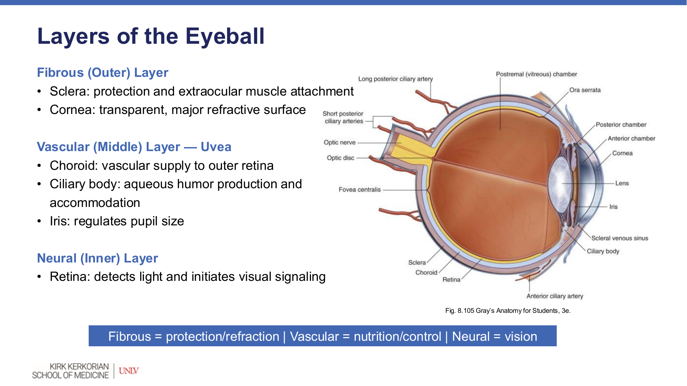
Original extracted slide text
Layers of the Eyeball Fibrous (Outer) Layer • Sclera: protection and extraocular muscle attachment • Cornea: transparent, major refractive surface Vascular (Middle) Layer — Uvea • Choroid: vascular supply to outer retina • Ciliary body: aqueous humor production and accommodation • Iris: regulates pupil size Neural (Inner) Layer • Retina: detects light and initiates visual signaling Fig. 8.105 Gray’s Anatomy for Students, 3e. Fibrous = protection/refraction | Vascular = nutrition/control | Neural = vision
Cornea, Lens, Image Formation
Tested concepts and clinical applications
- Q113 — The air-cornea interface supplies most fixed refractive power; the lens provides adjustable focusing.
- Q114 — The ocular optical system reverses image orientation, so superior field projects inferiorly and right field onto left retinal halves.
- Q115 — A negative lens reduces effective convergence, moving the focus posteriorly onto the retina.
- Q116 — A less deformable lens cannot round adequately for near focus despite ciliary activation; this extends the slide's adjustable-focus concept.
Show full original slide image
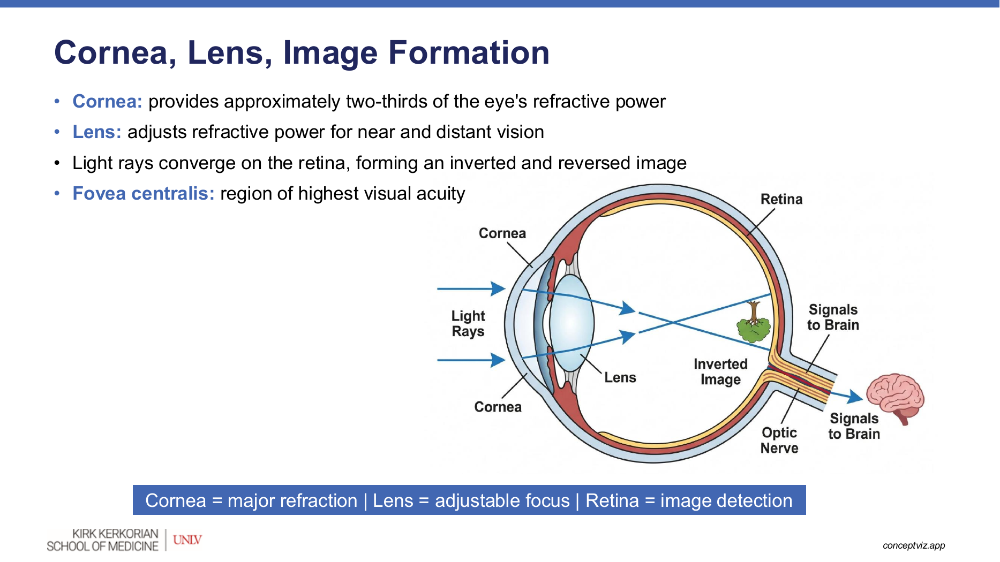
Original extracted slide text
Cornea, Lens, Image Formation • Cornea: provides approximately two-thirds of the eye's refractive power • Lens: adjusts refractive power for near and distant vision • Light rays converge on the retina, forming an inverted and reversed image • Fovea centralis: region of highest visual acuity Cornea = major refraction | Lens = adjustable focus | Retina = image detection conceptviz.app
Ciliary Body & Accommodation
Tested concepts and clinical applications
- Q117 — Parasympathetic ciliary contraction reduces suspensory tension, increasing lens curvature and refractive power.
- Q118 — Preganglionic oculomotor fibers synapse in ciliary ganglion; postganglionic short ciliary fibers activate ciliary muscle.
- Q119 — Relaxation increases zonular traction and reduces lens curvature/power.
Show full original slide image
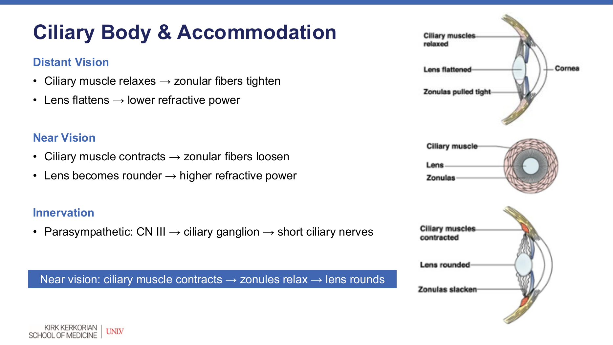
Original extracted slide text
Ciliary Body & Accommodation Distant Vision • Ciliary muscle relaxes → zonular fibers tighten • Lens flattens → lower refractive power Near Vision • Ciliary muscle contracts → zonular fibers loosen • Lens becomes rounder → higher refractive power Innervation • Parasympathetic: CN III → ciliary ganglion → short ciliary nerves Near vision: ciliary muscle contracts → zonules relax → lens rounds
Iris & Pupillary Control
Tested concepts and clinical applications
- Q120 — Circular sphincter contraction produces miosis; its efferent route differs from sympathetic dilation.
- Q121 — These fibers travel along the carotid/orbital pathway and chiefly through long ciliary nerves to produce mydriasis.
- Q122 — Loss of sympathetic dilation causes miosis in Horner syndrome; the deck's sympathetic iris pathway explains the pupil finding.
- Q123 — Muscarinic blockade prevents parasympathetic miosis and accommodation, causing mydriasis and cycloplegia.
- Q124 — Sympathetic postganglionic and sensory fibers pass through without using this ganglion as their autonomic synapse.
Show full original slide image
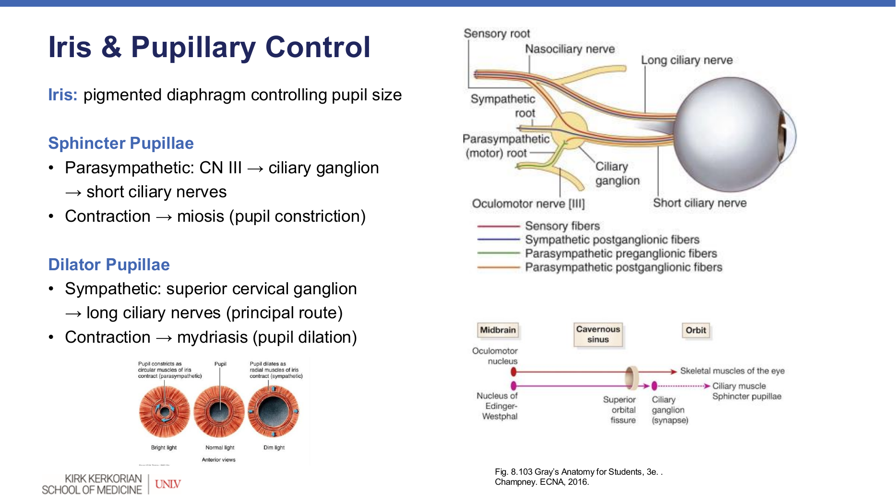
Original extracted slide text
Iris & Pupillary Control Iris: pigmented diaphragm controlling pupil size Sphincter Pupillae • Parasympathetic: CN III → ciliary ganglion → short ciliary nerves • Contraction → miosis (pupil constriction) Dilator Pupillae • Sympathetic: superior cervical ganglion → long ciliary nerves (principal route) • Contraction → mydriasis (pupil dilation) Fig. 8.103 Gray’s Anatomy for Students, 3e. . Champney. ECNA, 2016.
Retina, Macula, Fovea & Optic Disc
Tested concepts and clinical applications
- Q125 — Retinal ganglion-cell axons converge at the optic disc to form CN II.
- Q126 — The fovea specializes in detailed central vision, whereas peripheral retina is more rod-rich.
- Q127 — The disc is an exit/entry site, so incident light at that retinal location cannot be directly detected.
- Q128 — Rods are highly sensitive for scotopic vision; cones support color and high spatial acuity, especially in fovea.
- Q129 — Phototransduction activates transducin/phosphodiesterase, lowering cGMP and decreasing glutamate release; darkness keeps cGMP-gated channels open.
Show full original slide image
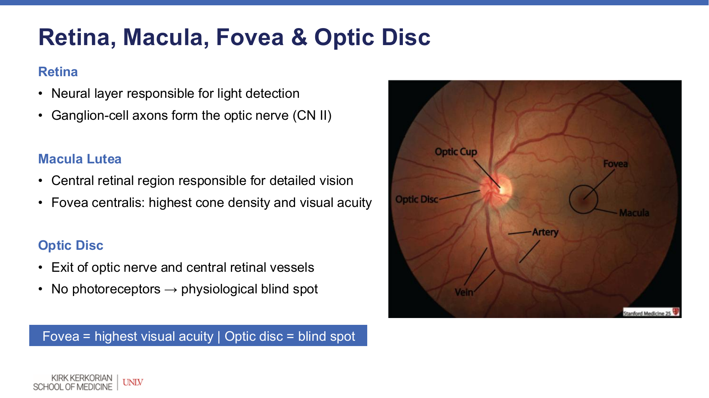
Original extracted slide text
Retina, Macula, Fovea & Optic Disc Retina • Neural layer responsible for light detection • Ganglion-cell axons form the optic nerve (CN II) Macula Lutea • Central retinal region responsible for detailed vision • Fovea centralis: highest cone density and visual acuity Optic Disc • Exit of optic nerve and central retinal vessels • No photoreceptors → physiological blind spot Fovea = highest visual acuity | Optic disc = blind spot
Normal fundus landmarks
Tested concepts and clinical applications
- Q130 — The source fundus images show the disc/vessels nasally and the macula temporally; the macular center is fovea.
- Q131 — Damage to central high-acuity retina impairs reading and detailed fixation while peripheral retina can remain functional.
Show full original slide image
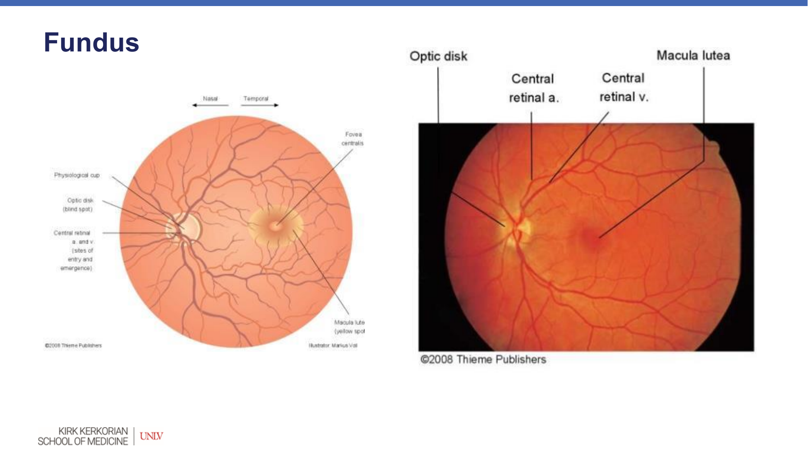
Original extracted slide text
Fundus
Normal disc versus papilledema
Tested concepts and clinical applications
- Q132 — Papilledema is a pressure-related diagnosis, typically bilateral; other causes of disc edema must be distinguished.
- Q133 — The optic nerve is a CNS extension with meningeal coverings; raised pressure can impair axoplasmic transport at the disc.
- Q134 — Disc swelling can enlarge the blind spot; central acuity may be relatively preserved early, so a normal reading test does not exclude it.
Qualification: Papilledema means optic disc edema specifically due to raised intracranial pressure; the term does not cover every cause of a swollen disc.
Show full original slide image
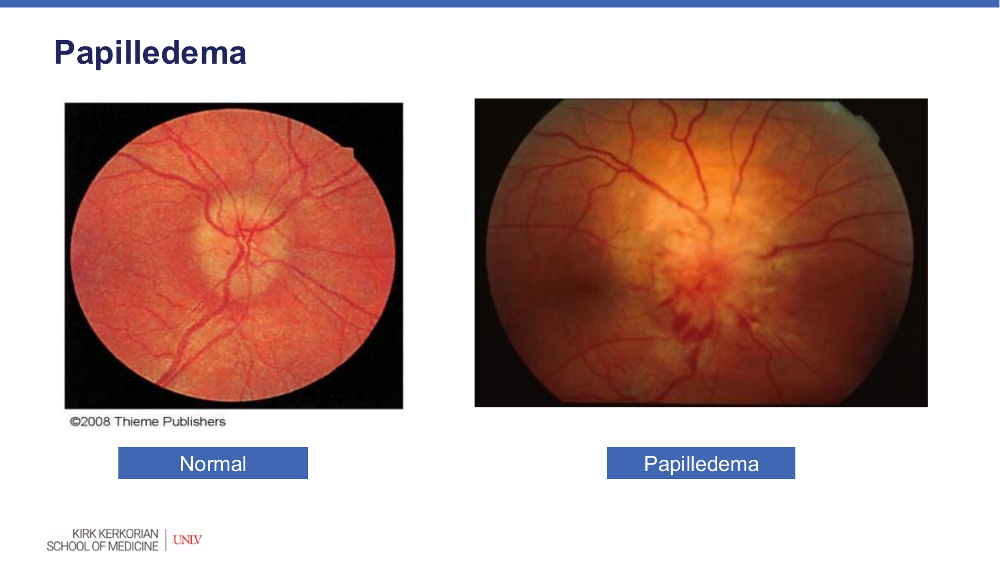
Original extracted slide text
Papilledema Normal Papilledema
Visual Fields & Visual Pathways
Show full original slide image
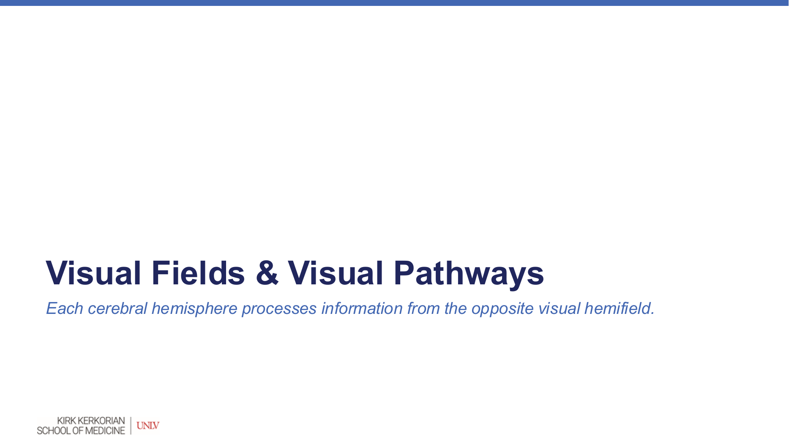
Original extracted slide text
Visual Fields & Visual Pathways Each cerebral hemisphere processes information from the opposite visual hemifield.
Visual Fields vs Retinal Fields
Tested concepts and clinical applications
- Q135 — Left space maps to the right half of each retina: nasal half in the left eye and temporal half in the right eye.
- Q136 — Vertical inversion places superior visual space on inferior retinal tissue, whose temporal radiation pathway includes Meyer's loop.
- Q137 — Right field maps to left retinal halves, and inferior field maps superiorly. Nasal right-eye fibers cross to join left temporal-eye fibers in the left pathway.
Show full original slide image
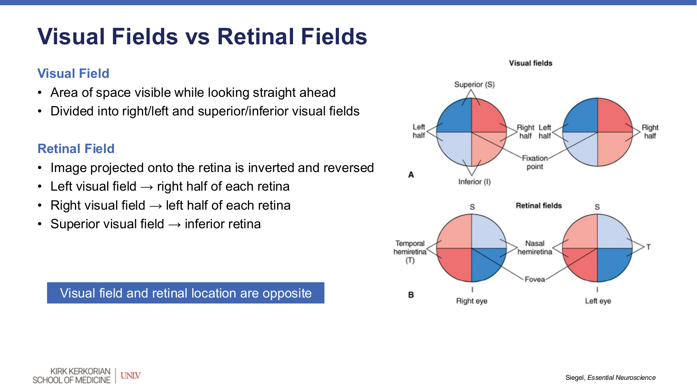
Original extracted slide text
Visual Fields vs Retinal Fields Visual Field • Area of space visible while looking straight ahead • Divided into right/left and superior/inferior visual fields Retinal Field • Image projected onto the retina is inverted and reversed • Left visual field → right half of each retina • Right visual field → left half of each retina • Superior visual field → inferior retina Visual field and retinal location are opposite Siegel, Essential Neuroscience
Nasal vs Temporal Hemiretina
Tested concepts and clinical applications
- Q138 — Horizontal image reversal maps temporal visual space onto nasal retina.
- Q139 — Nasal and temporal retinal halves in each eye receive opposite visual-space halves; the central region is binocular.
Show full original slide image
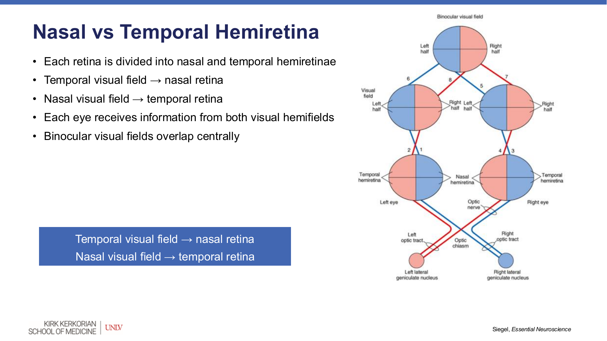
Original extracted slide text
Nasal vs Temporal Hemiretina • Each retina is divided into nasal and temporal hemiretinae • Temporal visual field → nasal retina • Nasal visual field → temporal retina • Each eye receives information from both visual hemifields • Binocular visual fields overlap centrally Temporal visual field → nasal retina Nasal visual field → temporal retina Siegel, Essential Neuroscience
Visual Pathway: Retina to Cortex
Tested concepts and clinical applications
- Q140 — This is the deck's principal retinogeniculocalcarine pathway; not all retinal fibers terminate in LGN.
- Q141 — Most optic tract fibers relay in LGN before reaching cortex through optic radiations.
- Q142 — The light reflex does not require intact conscious visual cortex, unlike cortical perception of the image.
Show full original slide image
Original extracted slide text
Visual Pathway: Retina to Cortex • Retinal ganglion-cell axons form the optic nerve (CN II) • Optic nerves converge at the optic chiasm • Fibers continue as optic tracts • Most fibers synapse in the lateral geniculate nucleus (LGN) of the thalamus • Optic radiations project to the primary visual cortex (V1) Retina → CN II → Chiasm → Optic tract → LGN → Optic radiations → V1 The Visual Pathway Berger. CCNA
Optic Chiasm: Which Fibers Cross?
Tested concepts and clinical applications
- Q143 — Crossing nasal fibers join uncrossed temporal retinal fibers from the opposite eye to encode a shared contralateral hemifield.
- Q144 — It contains crossed left nasal retinal fibers and uncrossed right temporal retinal fibers.
- Q145 — Both encode right visual space, with the nasal right-eye population crossing at chiasm.
Show full original slide image
Original extracted slide text
Optic Chiasm: Which Fibers Cross? • Nasal retinal fibers cross at the optic chiasm • Temporal retinal fibers remain ipsilateral • Each optic tract carries information from the contralateral visual hemifield • Right optic tract → left visual field • Left optic tract → right visual field Nasal fibers CROSS | Temporal fibers STAY Which visual hemifield is carried by the right optic tract? The Visual Pathway Berger. CCNA
Lateral Geniculate Nucleus & Optic Radiations
Tested concepts and clinical applications
- Q146 — Inferior retinal fibers loop through temporal lobe to inferior calcarine cortex; injury causes superior quadrantanopia.
- Q147 — The superior optic radiations travel parietally; their lesions cause inferior quadrantanopia.
- Q148 — Each LGN receives combined input from both eyes after chiasmal sorting and sends optic radiations to cortex on its own side.
Show full original slide image
Original extracted slide text
Lateral Geniculate Nucleus & Optic Radiations Lateral Geniculate Nucleus (LGN) • Visual relay nucleus of the thalamus • Receives input from the contralateral visual hemifield • Projects to the primary visual cortex via optic radiations Optic Radiations • Temporal lobe (Meyer's loop): inferior retinal fibers → superior visual field • Parietal lobe: superior retinal fibers → inferior visual field Meyer's loop → superior visual field Parietal radiations → inferior visual field Siegel, Essential Neuroscience
Primary Visual Cortex (V1)
Tested concepts and clinical applications
- Q149 — V1/area 17 lies on the medial occipital surface around calcarine sulcus.
- Q150 — Superior bank/cuneus represents contralateral inferior visual field.
- Q151 — Inferior calcarine bank/lingual gyrus represents contralateral superior field.
- Q152 — Central vision is represented posteriorly with extensive cortical allocation; more anterior calcarine regions represent peripheral vision.
Show full original slide image
Original extracted slide text
Primary Visual Cortex (V1) • Located along the calcarine sulcus of the occipital lobe • Cuneus (superior bank): inferior visual field • Lingual gyrus (inferior bank): superior visual field • Occipital pole: central (macular) vision • More anterior visual cortex represents peripheral vision Cuneus = inferior visual field Lingual gyrus = superior visual field Siegel, Essential Neuroscience
Visual Pathway: Three Rules for Localization
Tested concepts and clinical applications
- Q153 — Inferior retina represents upper space, and left postchiasmal pathways carry right space; temporal fibers are Meyer's loop.
- Q154 — This avoids mistaking temporal visual field for temporal retina and keeps eye side distinct from hemifield side.
Show full original slide image
Original extracted slide text
Visual Pathway: Three Rules for Localization Rule 1 — Retinal Projection • Visual fields project to the opposite retinal halves Rule 2 — Optic Chiasm • Nasal retinal fibers cross; temporal retinal fibers remain ipsilateral Rule 3 — Cerebral Representation • Each hemisphere processes the contralateral visual hemifield • Temporal radiations carry superior-field information • Parietal radiations carry inferior-field information Visual field → Retina → CN II → Chiasm → Optic tract → LGN → Optic radiations → Cortex The Visual Pathway Berger. CCNA
Visual Field Defects & Lesion Localization
Show full original slide image
Original extracted slide text
Visual Field Defects & Lesion Localization
Visual Field Defects: Localization Principles
Tested concepts and clinical applications
- Q155 — Prechiasmal lesions affect one eye; exact pattern depends on lesion extent and site.
- Q156 — This is a postchiasmal pattern; the affected hemifield is opposite the cerebral lesion.
Show full original slide image
Original extracted slide text
Visual Field Defects: Localization Principles • Lesions along the visual pathway produce characteristic visual-field deficits • Prechiasmal lesions: monocular visual loss • Chiasmal lesions: heteronymous visual-field defects • Postchiasmal lesions: contralateral homonymous visual-field defects • Lesion location determines the pattern of visual loss Before chiasm → monocular Chiasm → heteronymous After chiasm → homonymous Visual Field Defects Berger. CCNA
Optic Nerve & Optic Chiasm Lesions
Tested concepts and clinical applications
- Q157 — The right optic nerve contains all afferent visual information from the right eye before chiasmal sorting.
- Q158 — Each nasal hemiretina detects its temporal field, so midline chiasmal compression by a pituitary mass causes bitemporal hemianopia.
- Q159 — Retinal location and visual-field location are opposite; this is the key step in the chiasm question.
Show full original slide image
Original extracted slide text
Optic Nerve & Optic Chiasm Lesions Optic Nerve Lesion • Ipsilateral monocular visual loss • Loss of visual input from the affected eye Optic Chiasm Lesion • Damage to crossing nasal retinal fibers • Bitemporal hemianopia • Classically associated with pituitary mass compression Optic nerve → monocular loss | Optic chiasm → bitemporal hemianopia Visual Field Defects Berger. CCNA
Optic Tract Lesion
Tested concepts and clinical applications
- Q160 — The left tract carries right visual-space information from both eyes.
- Q161 — These encode the left hemifield and join within the right tract after nasal crossing.
Show full original slide image
Original extracted slide text
Optic Tract Lesion • Each optic tract carries information from the contralateral visual hemifield • Lesion produces contralateral homonymous hemianopia • Both eyes lose the same half of their visual fields Example • Right optic tract lesion → left homonymous hemianopia Right optic tract lesion → left homonymous hemianopia Visual Field Defects Berger. CCNA
Optic Radiations: Temporal vs Parietal Lesions
Tested concepts and clinical applications
- Q162 — Left temporal inferior retinal fibers carry right superior visual-space information, producing 'pie in the sky' loss.
- Q163 — Right parietal superior retinal fibers encode left inferior space: 'pie on the floor.'
- Q164 — These patterns follow retinal inversion and ipsilateral radiation projections from LGN to V1.
Show full original slide image
Original extracted slide text
Optic Radiations: Temporal vs Parietal Lesions Temporal Lobe — Meyer's Loop • Carries information from the contralateral superior visual field • Lesion → contralateral superior quadrantanopia • Pie in the sky Parietal Lobe — Superior Optic Radiations • Carries information from the contralateral inferior visual field • Lesion → contralateral inferior quadrantanopia • Pie on the floor Temporal → superior field loss | Parietal → inferior field loss Visual Field Defects Siegel, Berger
Primary Visual Cortex Lesions
Tested concepts and clinical applications
- Q165 — PCA supplies much medial occipital visual cortex; sparing of macular cortex can preserve central vision, and the light reflex can remain intact because it uses pretectal pathways.
- Q166 — This often supports occipital involvement with spared macular cortex, sometimes due to collateral supply, but is not obligatory or absolutely site-specific.
- Q167 — Posterior occipital cortex represents the macular field; more anterior regions represent peripheral visual space.
Qualification: Macular sparing is common in some occipital lesions, but is neither required nor perfectly specific. Sparing reflects preserved central-field representation, sometimes with collateral supply.
Show full original slide image
Original extracted slide text
Primary Visual Cortex Lesions • Primary visual cortex (V1) lies along the calcarine sulcus • Unilateral lesion → contralateral homonymous hemianopia • Occipital pole: represents central (macular) vision • Some occipital lesions produce macular sparing • Common vascular association: posterior cerebral artery (PCA) Siegel, Essential Neuroscience
Visual Field Defects: Summary
Tested concepts and clinical applications
- Q168 — Parietal radiations carry contralateral inferior field information.
- Q169 — This affects input from only the right eye. Left tract, LGN, radiations, or V1 can produce right homonymous loss.
- Q170 — Testing each eye demonstrates a binocular hemifield deficit, supporting left postchiasmal localization.
Show full original slide image
Original extracted slide text
Visual Field Defects: Summary Lesion Site Visual Field Deficit Optic nerve Ipsilateral monocular visual loss Optic chiasm Bitemporal hemianopia Optic tract Contralateral homonymous hemianopia Temporal optic radiations Contralateral superior quadrantanopia Parietal optic radiations Contralateral inferior quadrantanopia Contralateral homonymous hemianopia ± Primary visual cortex macular sparing Visual Field Defects Berger. CCNA
Visual System:
Show full original slide image
Original extracted slide text
Visual System: Structure, Visual Pathways, and Reflexes Aftab Merchant, MBBS, FCPS, MHPE Assistant Dean of Anatomical Education Professor of Medical Education Course Director Anatomy and Neuroscience Tel: (702) 545-2050 | aftab.merchant@unlv.edu Schedule an Appointment
Visual and Ocular Reflexes
| Slide | Source content | Practice |
|---|---|---|
| 1 | Visual and Ocular Reflexes | Title, objectives, divider, or closing page retained |
| 2 | Pupillary Light Reflex: Neural Pathway | Q171, Q172, Q173, Q174, Q175 |
| 3 | Pupillary Light Reflex: CN II vs CN III Lesions | Q176, Q177, Q178, Q179, Q180, Q181 |
| 4 | Relative Afferent Pupillary Defect (Marcus Gunn Pupil) | Q182, Q183, Q184 |
| 5 | Near Response (Accommodation–Convergence) | Q185, Q186, Q187 |
| 6 | Neural Pathways of the Near Response | Q188, Q189, Q190 |
| 7 | Light-Near Dissociation | Q191, Q192, Q193, Q194, Q195 |
| 8 | Corneal (Blink) Reflex | Q196, Q197, Q198 |
| 9 | Corneal Reflex: Lesion Localization | Q199, Q200, Q201, Q202 |
| 10 | Vestibulo-Ocular Reflex (VOR) | Q203, Q204, Q205, Q206, Q207 |
| 11 | Oculocephalic Reflex (Doll's Eye Maneuver) | Q208, Q209, Q210 |
| 12 | Medial Longitudinal Fasciculus (MLF) | Q211, Q212 |
| 13 | Internuclear Ophthalmoplegia (INO) | Q213, Q214, Q215, Q216, Q217, Q218 |
| 14 | Summary | Q219, Q220 |
Visual and Ocular Reflexes
Show full original slide image
Original extracted slide text
Visual and Ocular Reflexes
Pupillary Light Reflex: Neural Pathway
Tested concepts and clinical applications
- Q171 — Retinal ganglion axons carry the light signal through optic nerve pathways toward pretectal nuclei.
- Q172 — Bilateral central connections distribute one eye's light signal to both parasympathetic outputs, producing direct and consensual responses.
- Q173 — Its axons run with III and synapse in ciliary ganglion before reaching sphincter pupillae.
- Q174 — This orbital parasympathetic ganglion relays output to sphincter pupillae and ciliary muscle.
- Q175 — The contralateral pupil constricts through bilateral pretectal–Edinger–Westphal connections.
Show full original slide image
Original extracted slide text
Pupillary Light Reflex: Neural Pathway • Function: Regulates light entering the eye through pupillary constriction (miosis) • Stimulus: Light entering the retina • Afferent limb (CN II): Retina → optic nerve → pretectal nuclei (midbrain) • Central connection: Pretectal nuclei → bilateral Edinger– Westphal nuclei • Efferent limb (CN III): Edinger–Westphal nucleus → CN III → ciliary ganglion → short ciliary nerves → sphincter pupillae • Response: Direct and consensual pupillary constriction Singh. TCNA, 4e.
Pupillary Light Reflex: CN II vs CN III Lesions
Tested concepts and clinical applications
- Q176 — Left afferent input is absent, but both efferent pathways work when the right retina is stimulated.
- Q177 — An efferent defect prevents the affected pupil from responding to either eye's afferent stimulus; isolated parasympathetic injury may spare other III functions.
- Q178 — Normal left afference activates bilateral outputs, including a consensual response in the blind right eye.
- Q179 — Right retinal afference still reaches bilateral central nuclei, but only the intact left output can constrict its pupil.
- Q180 — Loss of III motor supply produces ptosis/down-and-out position, while efferent parasympathetic failure prevents left miosis with either afferent stimulus.
- Q181 — A compressive aneurysm can affect superficial III parasympathetic fibers; pupil findings are useful but do not by themselves exclude serious causes in pupil-sparing presentations.
Qualification: The source table models complete isolated afferent lesions and complete parasympathetic efferent failure. Partial lesions and pupil-sparing III palsies do not necessarily follow the complete-lesion table.
Show full original slide image
Original extracted slide text
Pupillary Light Reflex: CN II vs CN III Lesions Light in Light in Lesion Affected Eye Unaffected Eye CN II Neither pupil constricts Both pupils constrict (afferent) CN III Only unaffected pupil constricts Only unaffected pupil constricts (efferent) CN II lesion → defective sensory input CN III lesion → defective pupillary constriction Singh. TCNA, 4e.
Relative Afferent Pupillary Defect (Marcus Gunn Pupil)
Tested concepts and clinical applications
- Q182 — The left eye supplies less afferent light input; both intact efferent outputs relax relative to the response driven by the healthier eye.
- Q183 — Optic neuritis is a classic cause of reduced afferent input; normal resting pupil size and intact III function are compatible with RAPD.
- Q184 — The deck's complete CN II table is an idealized extreme; partial optic nerve disease can still drive weaker bilateral constriction.
Qualification: RAPD describes asymmetric afferent drive, often with equal resting pupil sizes and intact efferent pathways. Severe asymmetric retinal disease can also cause it.
Show full original slide image
Original extracted slide text
Relative Afferent Pupillary Defect (Marcus Gunn Pupil) • Cause: Reduced sensory input from one eye, commonly due to optic nerve disease • Test: Swinging flashlight test • Light in healthy eye → both pupils constrict • Light moved to affected eye → both pupils dilate relatively (reduced constriction) • Efferent CN III pathways remain intact RAPD → Afferent defect (CN II), not an efferent CN III lesion
Near Response (Accommodation–Convergence)
Tested concepts and clinical applications
- Q185 — The lens rounds, medial recti turn both eyes inward, and sphincter pupillae constricts the pupils.
- Q186 — Bilateral III somatic motor output adducts both eyes toward a near target.
- Q187 — Miosis complements increased lens power and convergence; it is not the mechanism that changes lens curvature.
Show full original slide image
Original extracted slide text
Near Response (Accommodation–Convergence) The near response consists of three coordinated changes when shifting focus from a distant to a near object. 1. Accommodation: Ciliary muscle contracts → zonular fibers relax → lens becomes rounder 2. Convergence: Medial rectus muscles contract (CN III) → eyes turn inward 3. Pupillary Constriction (Miosis): Sphincter pupillae contracts → reduces pupil diameter Near response = Accommodation + Convergence + Miosis
Neural Pathways of the Near Response
Tested concepts and clinical applications
- Q188 — Both ultimately use III parasympathetic output for miosis, but their upstream circuitry differs.
- Q189 — Parasympathetic visceral motor output produces accommodation/miosis; somatic motor output produces convergence.
- Q190 — Its medial rectus neurons drive convergence; Edinger–Westphal supplies preganglionic parasympathetic pupil/lens output.
Show full original slide image
Original extracted slide text
Neural Pathways of the Near Response Afferent Pathway • Retina → CN II → visual cortex → supranuclear near-response pathways Efferent Pathways Parasympathetic (GVE) • Edinger–Westphal nucleus → CN III → ciliary ganglion • Ciliary muscle → accommodation • Sphincter pupillae → miosis Somatic Motor (GSE) • Oculomotor nucleus → CN III → medial rectus muscles • Bilateral eye convergence CN III coordinates all three components of the near response
Light-Near Dissociation
Tested concepts and clinical applications
- Q191 — The near response is preserved or relatively better despite impaired light-mediated constriction.
- Q192 — Small irregular pupils with light-near dissociation are the classic association emphasized by the slides.
- Q193 — Ciliary ganglion/short ciliary injury and aberrant reinnervation can produce tonic near responses; early near function may also be impaired.
- Q194 — Parinaud syndrome involves dorsal midbrain structures, including pupillary light pathways, and is classically associated with pineal-region compression.
- Q195 — Damage can preferentially affect light-reflex relays while relatively sparing supranuclear near pathways.
Qualification: Adie near constriction may be impaired early and becomes tonic with reinnervation. Light-near dissociation denotes a relative advantage of near over light constriction.
Show full original slide image
Original extracted slide text
Light-Near Dissociation • Pupillary response to light is impaired • Pupillary constriction during near fixation is preserved or relatively better Clinical Associations • Argyll Robertson pupil: small, irregular pupils; classically associated with neurosyphilis • Adie's tonic pupil: dilated pupil with slow, sustained near constriction • Parinaud syndrome: dorsal midbrain lesion disrupting pupillary light-reflex pathways Light response impaired | Near constriction relatively preserved
Corneal (Blink) Reflex
Tested concepts and clinical applications
- Q196 — Corneal somatic sensory input activates bilateral facial motor output.
- Q197 — Bilateral facial motor nuclei activate eyelid closure; the branchial motor category is SVE.
- Q198 — One afferent corneal signal drives direct and consensual blink responses through bilateral motor connections.
Show full original slide image
Original extracted slide text
Corneal (Blink) Reflex • Function: Protective reflex producing bilateral eyelid closure • Stimulus: Light touch of the cornea • Afferent limb (GSA): CN V1 (nasociliary nerve) → spinal trigeminal nucleus • Central connections: Trigeminal sensory pathways → bilateral facial motor nuclei • Efferent limb (SVE): CN VII → orbicularis oculi • Response: Bilateral blinking (direct + consensual) Corneal reflex: V1 in → VII out → bilateral blinking
Corneal Reflex: Lesion Localization
Tested concepts and clinical applications
- Q199 — Left sensory input is absent, but both VII outputs are demonstrably intact when right corneal input is provided.
- Q200 — The right efferent limb is defective, while sensory input from both corneas reaches the intact left motor output.
- Q201 — The sensory signal reaches both motor nuclei, but left facial output cannot activate orbicularis.
- Q202 — Peripheral VII dysfunction impairs ipsilateral blink output; preserved sensation distinguishes it from isolated V1 loss.
Show full original slide image
Original extracted slide text
Corneal Reflex: Lesion Localization Lesion Touch affected cornea Touch unaffected cornea CN V1 (afferent) Neither eye blinks Both eyes blink CN VII (efferent) Only unaffected eye blinks Only unaffected eye blinks Clinical Correlation • CN V1 lesion: loss of sensory input from affected cornea • CN VII lesion: impaired ipsilateral eyelid closure (e.g., Bell palsy)
Vestibulo-Ocular Reflex (VOR)
Tested concepts and clinical applications
- Q203 — Angular head rotation changes vestibular afferent activity, initiating compensatory eye movements.
- Q204 — Eyes move opposite the head: left eye abducts via VI, and right eye adducts via III through internuclear connections.
- Q205 — The VI motor component drives ipsilateral lateral rectus while crossed internuclear input drives the other eye's medial rectus.
- Q206 — Compensatory eye movement limits retinal image slip and can operate without conscious visual processing, including in darkness.
- Q207 — The nucleus contains left lateral rectus motor neurons and internuclear neurons for right medial rectus via the MLF; a nerve lesion alone mainly impairs left abduction.
Show full original slide image
Original extracted slide text
Vestibulo-Ocular Reflex (VOR) • Function: Stabilizes gaze during head movement • Stimulus: Head rotation detected by semicircular canals • Afferent limb: Vestibular division of CN VIII • Central pathway: Vestibular nuclei → CN VI nucleus → MLF → CN III nucleus • Efferent limb: CN VI (lateral rectus) + CN III (medial rectus) • Response: Eyes move opposite to head rotation • Head turns one way → eyes move the opposite way • VOR stabilizes the retinal image during head movement without requiring conscious visual processing. Vestibular Health Website
Oculocephalic Reflex (Doll's Eye Maneuver)
Tested concepts and clinical applications
- Q208 — Compensatory movement opposite head rotation is the expected doll's-eye response in this context.
- Q209 — This can reflect dysfunction along vestibular/brainstem/ocular motor pathways; drugs and other confounders matter, so the maneuver alone does not establish brain death.
- Q210 — The source specifically cautions against oculocephalic testing when cervical instability is suspected.
Qualification: Absent doll’s-eye responses require context, including medication and peripheral pathway confounders; this single maneuver does not establish brain death. Avoid head rotation with suspected cervical instability.
Show full original slide image
Original extracted slide text
Oculocephalic Reflex (Doll's Eye Maneuver) • Assesses vestibular–brainstem–ocular motor pathways in unconscious patients • Intact VOR: Eyes move opposite to head rotation, maintaining gaze direction in space • Absent VOR: Eyes remain stationary within the orbits and move with the head • Abnormal response may indicate brainstem dysfunction Clinical Precaution • Do not perform if cervical spine instability is suspected Eyes move left Eyes stay centered Schematic: in both examples the head turns right; the eye positions within the orbits differ. Oculocephalic reflex = clinical assessment of VOR integrity
Medial Longitudinal Fasciculus (MLF)
Tested concepts and clinical applications
- Q211 — The paired tract links vestibular and ocular motor nuclei and coordinates conjugate movement.
- Q212 — These connections support conjugate movements and vestibulo-ocular responses; the horizontal exam most often highlights VI-to-III communication.
Show full original slide image
Original extracted slide text
Medial Longitudinal Fasciculus (MLF) • Location: Paired white matter tract near the midline of the brainstem • Connects vestibular nuclei and ocular motor nuclei (CN III, IV, VI) • Coordinates conjugate eye movements • Essential for the vestibulo-ocular reflex • Lesion disrupts coordinated horizontal gaze MLF → coordinates eye movements between CN III, IV, VI and vestibular nuclei MLF spans from the upper medulla → pons → midbrain, running close to the midline in the tegmentum of each section. Siegel, EN, 4e.
Internuclear Ophthalmoplegia (INO)
Tested concepts and clinical applications
- Q213 — INO is named for the side of the impaired adducting eye; intact convergence helps show that medial rectus can still function through near pathways.
- Q214 — The contralateral eye abducts with nystagmus while the ipsilateral eye has impaired adduction.
- Q215 — The impaired adducting eye identifies the side of INO. Multiple sclerosis is a classic association in younger patients, and convergence can be preserved.
- Q216 — Stroke is a classic INO cause in older adults; multiple sclerosis is a common association in younger patients, especially with bilateral involvement.
- Q217 — An internuclear connection can be impaired while the final motor apparatus remains functional; convergence preservation is common but not universal in INO.
- Q218 — Ipsilateral gaze palsy plus ipsilateral INO leaves only contralateral abduction as the remaining horizontal movement.
Qualification: Convergence is often preserved in INO but is not guaranteed. Name the lesion for the side of the impaired adducting eye.
Show full original slide image
Original extracted slide text
Internuclear Ophthalmoplegia (INO) • Cause: Lesion of the medial longitudinal fasciculus (MLF) • Ipsilateral eye: Impaired adduction during horizontal gaze • Contralateral eye: Abducting nystagmus • Convergence: Usually preserved • Clinical associations: Multiple sclerosis (younger patients), brainstem stroke (older patients) • Example: Left MLF lesion → left eye fails to adduct on rightward gaze MLF lesion → ipsilateral adduction deficit + contralateral abducting nystagmus
Summary
Tested concepts and clinical applications
- Q219 — Light uses optic afference, corneal touch uses ophthalmic trigeminal afference, and rotation uses vestibular afference.
- Q220 — MLF coordinates ocular motor nuclei; it can produce INO without directly damaging retinal visual, V1 sensory, or pupil light-reflex pathways.
Show full original slide image
Original extracted slide text
Summary • Cornea and lens: Refract light and focus images on the retina • Retina: Detects light; fovea provides highest visual acuity • Visual pathway: Retina → CN II → chiasm → optic tract → LGN → radiations → V1 • Optic chiasm: Nasal fibers cross; each hemisphere processes the opposite visual field • Visual field defects: Optic nerve → monocular; chiasm → bitemporal; postchiasmal → homonymous loss • Pupillary light reflex: CN II → pretectal nuclei → Edinger–Westphal nuclei → CN III • Near reflex: Accommodation + convergence + miosis • Corneal reflex = V1 in → VII out • VOR and MLF: Coordinate eye movements; MLF lesions cause internuclear ophthalmoplegia (INO)
Supporting references
The supplied decks are the primary content source. The following references were consulted for anatomy, clinical qualifications, and related applications (October 15, 2026). No external service is needed to use the question bank.
- NCBI Bookshelf: Embryology, Neural Tube — Neurulation and prenatal open-defect screening.
- Developmental Biology: Differentiation of the Neural Tube — SHH ventral and BMP/TGF-beta dorsal patterning.
- Developmental Biology: The Neural Crest — Crest migration, peripheral derivatives, and regional timing.
- Pharyngeal Arches, Chapter 1: Normal Development and Derivatives — Arch layers, nerves, muscle and skeletal derivatives.
- NCBI Bookshelf: Embryology, Pharyngeal Pouch — Pouch epithelial derivatives and DiGeorge relationships.
- NCBI Bookshelf: Embryology, Thyroid — Thyroid descent, ectopia, and duct remnants.
- Revising the embryonic origin of thyroid C cells in mice and humans — Primary lineage evidence revising the older neural crest assignment.
- The Osteogenic Potential of the Neural Crest Lineage May Contribute to Craniosynostosis — Primary lineage evidence for frontal crest versus parietal mesoderm contributions.
- CDC: About Folic Acid — Preconception prevention and general 400-microgram daily recommendation.
- NCBI Bookshelf: Neuroanatomy, Visual Pathway — Visual-field localization, retinotopy, and limits of macular sparing.
- NCBI Bookshelf: Pupillary Light Reflexes and Pathway — Ocular optics, light-reflex pathways, and afferent/efferent lesions.
- NCBI Bookshelf: Neuroanatomy, Trigeminal Reflexes — Corneal sensory afference and bilateral blink output.
- Neuroscience: Central Vestibular Pathways — Vestibular gaze stabilization and internuclear ocular connections.
- NCBI Bookshelf: Internuclear Ophthalmoplegia — INO laterality, convergence qualification, and one-and-a-half extension.
- Neuroscience: Phototransduction — Light-induced cGMP decrease, hyperpolarization, and reduced transmitter release.
- NCBI Bookshelf: Papilledema — Pressure-related optic disc edema and distinction from other causes.
- National Eye Institute: Retinal Detachment — Retinal detachment symptoms and neural retinal separation.
- National Eye Institute: Facts About Glaucoma — Aqueous outflow and glaucoma background.